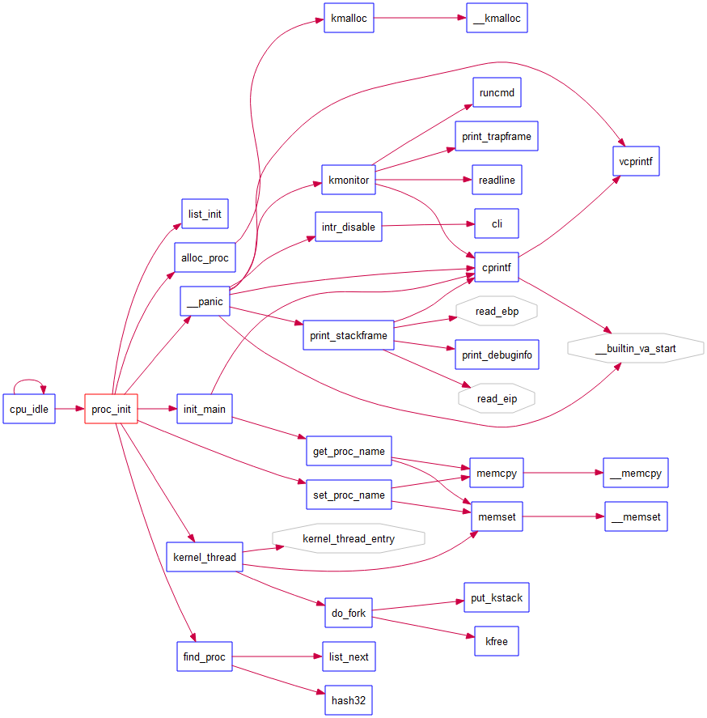
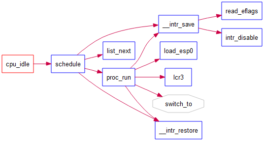
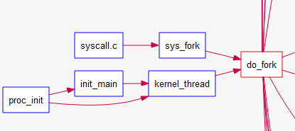

Tsinghua操作系统课程
不可视境界线最后变动于：1 小时前
Lab1
知识点
1.BIOS启动顺序
- CPU加电后代码段寄存器初始化为CS = F000H, EIP = 0000FFF0H, 然后再计算 Base+IP = FFFF0000H + 0000FFF0H = FFFFFFF0H 得到BIOS的EPROM(Erasable Programmable Read Only Memory)所在地, 这个地址的第一条指令是一个长跳转指令(这样CS和EIP都会更新)到BIOS代码中执行
- BIOS做完计算机硬件自检和初始化后，会选择一个启动设备（例如软盘、硬盘、光盘等），并且读取该设备的第一扇区(即主引导扇区或启动扇区)到内存一个特定的地址0x7c00处，然后CPU控制权会转移到那个地址继续执行。至此BIOS的初始化工作做完了，进一步的工作交给了ucore的bootloader。
附:
- 在16位的8086 CPU时代，内存限制在1MB范围内，且BIOS的代码固化在EPROM中。在基于Intel的8086 CPU的PC机中的EPROM被编址在1ＭB内存地址空间的最高64KB中。PC加电后，CS寄存器初始化为0xF000，IP寄存器初始化为0xFFF0, CS:IP=0xF000:0XFFF0（Segment:Offset 表示）=0xFFFF0(Linear表示)
- 默认将执行BIOS ROM编址在32位内存地址空间的最高端，即位于4GB地址的最后一个64KB内。在PC系统开机复位时，CPU进入实模式，并将CS寄存器设置成0xF000，将它的shadow register的Base值初始化设置为0xFFFF0000，EIP寄存器初始化设置为0x0000FFF0。所以机器执行的第一条指令的物理地址是0xFFFFFFF0。80386的BIOS代码也要和以前8086的BIOS代码兼容，故地址0xFFFFFFF0处的指令还是一条长跳转指令
jmp F000:E05B。注意，这个长跳转指令会触发更新CS寄存器和它的shadow register，即执行jmp F000 : E05B后，CS将被更新成0xF000。表面上看CS其实没有变化，但CS的shadow register被更新为另外一个值了，它的Base域被更新成0x000F0000，此时形成的物理地址为Base+EIP=0x000FE05B，这就是CPU执行的第二条指令的地址。此时这条指令的地址已经是1M以内了，且此地址不再位于BIOS ROM中，而是位于RAM空间中。由于Intel设计了一种映射机制，将内存高端的BIOS ROM映射到1MB以内的RAM空间里，并且可以使这一段被映射的RAM空间具有与ROM类似的只读属性。所以PC机启动时将开启这种映射机制，让4GB地址空间的最高一个64KB的内容等同于1MB地址空间的最高一个64K的内容，从而使得执行了长跳转指令后，其实是回到了早期的8086 CPU初始化控制流，保证了向下兼容
例图:


2.实模式
参考资料:《Intel 80386 Reference Programmers Manual-i386》, 基本是这个的翻译
在bootloader接手BIOS的工作后，当前的PC系统处于实模式（16位模式）运行状态，在这种状态下软件可访问的物理内存空间不能超过1MB，且无法发挥Intel 80386以上级别的32位CPU的4GB内存管理能力。
实模式将整个物理内存看成分段的区域，程序代码和数据位于不同区域，操作系统和用户程序并没有区别对待，而且每一个指针都是指向实际的物理地址。这样，用户程序的一个指针如果指向了操作系统区域或其他用户程序区域，并修改了内容，那么其后果就很可能是灾难性的。通过修改A20地址线可以完成从实模式到保护模式的转换。有关A20的进一步信息可参考“关于A20 Gate”。

- 地址
0-0x9ffff的640KB内存是DRAM，即插在主板上的内存条。
顶部0xf0000-0xfffff的64KB内存是ROM，存放BIOS代码。 - EPROM是通过地址来访问的, 80386将其映射到内存的顶端, 其他的一些外设也同样通过映射到地址空间来访问它们
3.分段机制/保护模式
a.保护模式
只有在保护模式下，80386的全部32根地址线有效，可寻址高达4G字节的线性地址空间和物理地址空间，可访问64TB（有2^14^个段，每个段最大空间为2^32^字节）的逻辑地址空间，可采用分段存储管理机制和分页存储管理机制。这不仅为存储共享和保护提供了硬件支持，而且为实现虚拟存储提供了硬件支持。通过提供4个特权级和完善的特权检查机制，既能实现资源共享又能保证代码数据的安全及任务的隔离。
【补充】保护模式下，有两个段表：GDT（Global Descriptor Table）和LDT（Local Descriptor Table），每一张段表可以包含8192 (2^13)个描述符[1]，因而最多可以同时存在2 * 2^13 = 2^14^个段。虽然保护模式下可以有这么多段，逻辑地址空间看起来很大，但实际上段并不能扩展物理地址空间，很大程度上各个段的地址空间是相互重叠的。目前所谓的64TB（2^(14+32)^=2^46^）逻辑地址空间是一个理论值，没有实际意义。在32位保护模式下，真正的物理空间仍然只有2^32字节那么大。注：在ucore lab中只用到了GDT，没有用LDT。
Reference: [1] 3.5.1 Segment Descriptor Tables, Intel® 64 and IA-32 Architectures Software Developer’s Manual
b.分段机制
b,c,d顺序按照35年前的i386文档, 图片来自IA-32文档
将内存划分成以起始地址和长度限制这两个二维参数表示的内存块，这些内存块就称之为段（Segment）。编译器把源程序编译成执行程序时用到的代码段、数据段、堆和栈等概念在这里可以与段联系起来，二者在含义上是一致的
转换逻辑地址（Logical Address,应用程序员看到的地址）到物理地址（Physical Address, 实际的物理内存地址）分以下两步：
[1] 分段地址转换：

[2] 分页地址转换，这一步中把线性地址转换为物理地址。（注意：这一步是可选的，由操作系统决定是否需要。在后续试验中会涉及。
c.Segment Selector
- A segment selector is a 16-bit identifier for a segment (see Figure 3-6). It does not point directly to the segment,
but instead points to the segment descriptor that defines the segment.

d.Segment register
For virtually any kind of program execution to take place, at least the code-segment (CS), data-segment (DS), and stack-segment (SS) registers must be loaded with valid segment selectors.
three additional data-segment registers (ES, FS, and GS) are optional

For a program to access a segment, the segment selector for the segment must have been loaded in one of the
segment registers. So, although a system can define thousands of segments, only 6 can be available for immediate
use.shadow register(“hidden” part):
When a segment selector is loaded into the visible part, the processor also loads the hidden part from the segment descriptor pointed to by the segment selector
e.Segment Descriptor
来自IA-32文档 P2902/3-10 Vol. 3A

f.Global Descriptor Tables
(IA-32 P2906/ 3-14 Vol. 3A):
全局描述符表的是一个保存多个段描述符的“数组”，其起始地址保存在全局描述符表寄存器GDTR中。GDTR长48位，其中高32位为基地址，低16位为段界限。由于GDT 不能有GDT本身之内的描述符进行描述定义，所以处理器采用GDTR为GDT这一特殊的系统段。注意，全局描述符表中第一个段描述符设定为空段描述符。GDTR中的段界限以字节为单位。对于含有N个描述符的描述符表的段界限通常可设为8*N-1。

g.Privilege Level
- Current privilege level (CPL) — The CPL is the privilege level of the currently executing program or task. It
is stored in bits 0 and 1 of the CS and SS segment registers. Normally, the CPL is equal to the privilege level of
the code segment from which instructions are being fetched. The processor changes the CPL when program
control is transferred to a code segment with a different privilege level.
The CPL is treated slightly differently when accessing conforming code segments. Conforming code segments can be accessed from any privilege level that is equal to or numerically greater (less privileged) than the DPL of the conforming code segment. Also, the CPL is not changed when the processor accesses a conforming code segment that has a different privilege level than the CPL.
- Descriptor privilege level (DPL) — The DPL is the privilege level of a segment or gate. It is stored in the DPL
field of the segment or gate descriptor for the segment or gate. - Requested privilege level (RPL) — The RPL is an override privilege level that is assigned to segment
selectors. It is stored in bits 0 and 1 of the segment selector. The RPL can be used to ensure that privileged code
does not access a segment on behalf of an application program unless the program itself has access privileges for
that segment. See Section 5.10.4, “Checking Caller Access Privileges (ARPL Instruction),” for a detailed description of
the purpose and typical use of the RPL.
PRIVILEGE CHECK:

4.中断与异常
- 中断机制给操作系统提供了处理意外情况的能力，同时它也是实现进程/线程抢占式调度的一个重要基石。但中断的引入导致了对操作系统的理解更加困难。
- 在操作系统中，有三种特殊的中断事件。
- 由CPU外部设备引起的 外部事件如I/O中断、时钟中断、控制台中断等是异步产生的（即产生的时刻不确定），与CPU的执行无关，我们称之为异步中断(asynchronous interrupt)也称外部中断,简称中断(interrupt)。
- 而把在CPU执行指令期间检测到不正常的或非法 的条件(如除零错、地址访问越界)所引起的内部事件称作同步中断(synchronous interrupt)，也称内部中断，简称**异常(**exception)。
- 把在程序中使用请求系统服务 的系统调用而引发的事件，称作陷入中断(trap interrupt)，也称软中断(soft interrupt)，系统调用(system call)简称trap。在后续试验中会进一步讲解系统调用。

Interrupt Descriptor Table:同GDT一样，IDT是一个8字节的描述符数组，但IDT的第一项可以包含一个描述符。CPU把中断（异常）号乘以8做为IDT的索引。IDT可以位于内存的任意位置，CPU通过IDT寄存器（IDTR）的内容来寻址IDT的起始地址。指令LIDT和SIDT用来操作IDTR。两条指令都有一个显示的操作数：一个6字节表示的内存地址(包含线性地址基址和界限)。
在保护模式下，最多会存在256个Interrupt/Exception Vectors。
范围[0，31]内的32个向量被异常Exception和NMI使用，但当前并非所有这32个向量都已经被使用，有几个当前没有被使用的，请不要擅自使用它们，它们被保留，以备将来可能增加新的Exception。
范围[32，255]内的向量被保留给用户定义的Interrupts。Intel没有定义，也没有保留这些Interrupts。用户可以将它们用作外部I/O设备中断（8259A IRQ），或者系统调用（System Call 、Software Interrupts）等。
IDT gate descriptors: Interrupts/Exceptions应该使用Interrupt Gate和Trap Gate，它们之间的唯一区别就是：当调用Interrupt Gate时，Interrupt会被CPU自动禁止；而调用Trap Gate时，CPU则不会去禁止或打开中断，而是保留它原来的样子。
【补充】所谓“自动禁止”，指的是CPU跳转到interrupt gate里的地址时，在将EFLAGS保存到栈上之后，清除EFLAGS里的IF位，以避免重复触发中断。在中断处理例程里，操作系统可以将EFLAGS里的IF设上,从而允许嵌套中断。但是必须在此之前做好处理嵌套中断的必要准备，如保存必要的寄存器等。二在ucore中访问Trap Gate的目的是为了实现系统调用。用户进程在正常执行中是不能禁止中断的，而当它发出系统调用后，将通过Trap Gate完成了从用户态（ring 3）的用户进程进了核心态（ring 0）的OS kernel。如果在到达OS kernel后禁止EFLAGS里的IF位，第一没意义（因为不会出现嵌套系统调用的情况），第二还会导致某些中断得不到及时响应，所以调用Trap Gate时，CPU则不会去禁止中断。总之，interrupt gate和trap gate之间没有优先级之分，仅仅是CPU在处理中断时有不同的方法，供操作系统在实现时根据需要进行选择。
在IDT中，可以包含如下3种类型的Descriptor：
- Task-gate descriptor （这里没有使用）
- Interrupt-gate descriptor （中断方式用到）
- Trap-gate descriptor（系统调用用到）

Interrrupt Gate and Trap Gate 和Call Gate非常相似, 不同的Gate用3bit的Type来表示:

由硬件完成的工作
硬件中断处理过程1（==起始==）：从CPU收到中断事件后，打断当前程序或任务的执行，根据某种机制跳转到中断服务例程去执行的过程。其具体流程如下：
- CPU在执行完当前程序的每一条指令后，都会去确认在执行刚才的指令过程中中断控制器（如：8259A）是否发送中断请求过来，如果有那么CPU就会在相应的时钟脉冲到来时从总线上读取中断请求对应的中断向量；
- CPU根据得到的中断向量（以此为索引）到IDT中找到该向量对应的中断描述符，中断描述符里保存着中断服务例程的段选择子；
- CPU使用IDT查到的中断服务例程的段选择子从**GDT(这几个表一定要去分开来, 现在这个是指寻址的段描述符表)**中取得相应的段描述符，段描述符里保存了中断服务例程的段基址和属性信息，此时CPU就得到了中断服务例程的起始地址
以上三个过程示意图: link
- CPU会根据CPL和中断服务例程的段描述符的DPL信息确认是否发生了特权级的转换。比如当前程序正运行在用户态，而中断程序是运行在内核态的，则意味着发生了特权级的转换，这时CPU会从当前程序的TSS信息（该信息在内存中的起始地址存在TR寄存器中）里取得该程序的内核栈地址，即包括内核态的ss和esp的值，并立即将系统当前使用的栈切换成新的内核栈。这个栈就是即将运行的中断服务程序要使用的栈。紧接着就将当前程序使用的用户态的ss和esp压到新的内核栈中保存起来；
- CPU需要开始保存当前被打断的程序的现场（即一些寄存器的值），以便于将来恢复被打断的程序继续执行。这需要利用内核栈来保存相关现场信息，即依次压入当前被打断程序使用的eflags，cs，eip，errorCode（如果是有错误码的异常）信息；
- CPU利用中断服务例程的段描述符将其第一条指令的地址加载到cs和eip寄存器中，开始执行中断服务例程。这意味着先前的程序被暂停执行，中断服务程序正式开始工作。
硬件中断处理过程2（==结束==）：中断处理工作完成后需要通过iret（或iretd）指令恢复被打断的程序的执行。CPU执行IRET指令的具体过程如下：
- 程序执行这条iret指令时，首先会从内核栈里弹出先前保存的被打断的程序的现场信息，即eflags，
cs，eip重新开始执行； - 如果存在特权级转换（
CS(CPL)>DPL），则还需要从内核栈中弹出用户态栈的ss和esp，这样也意味着栈也被切换回原先使用的用户态的栈了； - 如果此次处理的是带有错误码（errorCode）的异常，CPU在恢复先前程序的现场时，并不会弹出errorCode。这一步需要通过软件完成，即要求相关的中断服务例程在调用iret返回之前添加出栈代码主动弹出errorCode。
- 程序执行这条iret指令时，首先会从内核栈里弹出先前保存的被打断的程序的现场信息，即eflags，

特权级检查
中断处理得==特权级转换==是通过门描述符（gate descriptor）和相关指令来完成的。一个门描述符就是一个系统类型的段描述符，一共有4个子类型：
- 调用门描述符（call-gate descriptor may reside in the GDT or in an LDT, but not in the interrupt descriptor table (IDT)），
- 中断门描述符（interrupt-gate descriptor）
- 陷阱门描述符（trap-gate descriptor）
- 任务门描述符（task-gate descriptor）。
Task gates are used for task switching and are discussed in Chapter 7, “Task Management”. Trap and interrupt
gates are special kinds of call gates used for calling exception and interrupt handlers。中断门描述符和陷阱门描述符几乎是一样的。- 中断发生时实施特权检查的过程如下图所示：

- 门中的DPL和段选择符一起控制着访问，同时，段选择符结合偏移量（Offset）指出了中断处理例程的入口点。内核一般在门描述符中填入内核代码段的段选择子。产生中断前后，CPU一定不会将运行控制从高特权环转向低特权环，特权级必须要么保持不变（当操作系统内核自己被中断的时候），或被提升（当用户态程序被中断的时候）。无论哪一种情况，CPL必须大于等于目的代码段的DPL。如果CPL发生了改变，一个堆栈切换操作（通过TSS完成）就会发生。如果中断是被用户态程序中的指令所触发的（比如软件执行INT n生产的中断），还会增加一个额外的检查：门的DPL必须具有与CPL相同或更低的特权。这就防止了用户代码随意触发中断。如果这些检查失败，会产生一个一般保护异常（general-protection exception）。
ucore的实现流程
- 首先中断有几种类型
- 使用int软中断, 中断号为
T_SWITCH_TOU. 由于一开始ucore运行在内核, 所以内核到用户时会弹出栈上的ss和esp, 所以要在int指令前面加上两个push, 还要注意指令的字节长度匹配. - 使用int软中断, 中断号为
T_SWITCH_TOUK. 这个时候从用户态到内核态, 要通过TR寄存器查找当前的内核栈地址, 立即切换然后压入用户态的ss和esp, 由于challenge里有说明不用返回, 所以int执行完后要释放这两个东西. - 其他情况就是时钟中断和键盘中断到目前为止都是内核->内核再跳回内核, 没有什么复杂之处.
- 使用int软中断, 中断号为
- cpu接收到中断号, 然后到IDT表里把中断号当做下标查找Interrupt Discriptor, 这个时候就找到了中断处理例程的入口地址.
- cpu依次压入eflags，cs，eip, errorCode(如果是有错误码的异常), 然后加载描述符中的地址, 进入中断处理例程.
- 处理例程一开始就是两个pushl, 分别是errorCode和trapno), 再jmp到
__alltraps把可能需要改变的寄存器值压到栈上
在栈上倒着构建一个trapframe - 接下来进入处理例程, 0-31中断号由Intel保留, ucore定义的用
IRQ_OFFSET + IRQ_xx- 如果是时钟中断, inc一个全局变量tick, 没啥复杂的
- 如果是特权级转换, 更改一下trapframe的cs, es, ds, fs即可
- 执行完毕后弹出由我们压入的寄存器值, 然后到了
__altraps的iret指令, 由cpu弹出eip, cs, eflags - 判断特权级转换来决定是否弹出ss, esp, 中断结束
/* registers as pushed by pushal */
struct pushregs {
uint32_t reg_edi;
uint32_t reg_esi;
uint32_t reg_ebp;
uint32_t reg_oesp; /* Useless */
uint32_t reg_ebx;
uint32_t reg_edx;
uint32_t reg_ecx;
uint32_t reg_eax;
};
struct trapframe {
struct pushregs tf_regs;
uint16_t tf_gs;
uint16_t tf_padding0;
uint16_t tf_fs;
uint16_t tf_padding1;
uint16_t tf_es;
uint16_t tf_padding2;
uint16_t tf_ds;
uint16_t tf_padding3;
uint32_t tf_trapno;
/* below here defined by x86 hardware */
uint32_t tf_err;
uintptr_t tf_eip;
uint16_t tf_cs;
uint16_t tf_padding4;
uint32_t tf_eflags;
/* below here only when crossing rings, such as from user to kernel */
uintptr_t tf_esp;
uint16_t tf_ss;
uint16_t tf_padding5;
} __attribute__((packed));#----------------------------vector.S
.globl vector120
vector120:
pushl $0
pushl $120
jmp __alltraps
#----------------------------trapentry.S
#include <memlayout.h>
# vectors.S sends all traps here.
.text
.globl __alltraps
__alltraps:
# push registers to build a trap frame
# therefore make the stack look like a struct trapframe
pushl %ds
pushl %es
pushl %fs
pushl %gs
pushal
# load GD_KDATA into %ds and %es to set up data segments for kernel
movl $GD_KDATA, %eax
movw %ax, %ds
movw %ax, %es
# push %esp to pass a pointer to the trapframe as an argument to trap()
pushl %esp
# call trap(tf), where tf=%esp
call trap
# pop the pushed stack pointer
popl %esp
# return falls through to trapret...
.globl __trapret
__trapret:
# restore registers from stack
popal
# restore %ds, %es, %fs and %gs
popl %gs
popl %fs
popl %es
popl %ds
# get rid of the trap number and error code
addl $0x8, %esp
iret5.地址空间
flowchart LR
逻辑地址或虚拟地址-->|分段地址转换|线性地址
线性地址-->|分页地址转换|物理地址
线性地址-->End6.硬件访问
bootloader让CPU进入保护模式后，下一步的工作就是从硬盘上加载并运行OS。考虑到实现的简单性，bootloader的访问硬盘都是LBA模式的PIO（Program IO）方式，即所有的IO操作是通过CPU访问硬盘的IO地址寄存器完成。
一般主板有2个IDE通道，每个通道可以接2个IDE硬盘。访问第一个硬盘的扇区可设置IO地址寄存器0x1f0-0x1f7实现的，具体参数见下表。一般第一个IDE通道通过访问IO地址0x1f0-0x1f7来实现，第二个IDE通道通过访问0x170-0x17f实现。每个通道的主从盘的选择通过第6个IO偏移地址寄存器来设置。
表一 磁盘IO地址和对应功能
第6位：为1=LBA模式；0 = CHS模式 第7位和第5位必须为1
| IO地址 | 功能 |
|---|---|
| 0x1f0 | 读数据，当0x1f7不为忙状态时，可以读。 |
| 0x1f2 | 要读写的扇区数，每次读写前，你需要表明你要读写几个扇区。最小是1个扇区 |
| 0x1f3 | 如果是LBA模式，就是LBA参数的0-7位 |
| 0x1f4 | 如果是LBA模式，就是LBA参数的8-15位 |
| 0x1f5 | 如果是LBA模式，就是LBA参数的16-23位 |
| 0x1f6 | 第0~3位：如果是LBA模式就是24-27位 第4位：为0主盘；为1从盘 |
| 0x1f7 | 状态和命令寄存器。操作时先给命令，再读取，如果不是忙状态就从0x1f0端口读数据 |
当前 硬盘数据是储存到硬盘扇区中，一个扇区大小为512字节。读一个扇区的流程（可参看boot/bootmain.c中的readsect函数实现）大致如下：
- 等待磁盘准备好
- 发出读取扇区的命令
- 等待磁盘准备好
- 把磁盘扇区数据读到指定内存
附: TSS
在kern_init()->pmm_init()->gdt_init()中初始化, TSS中的内核栈地址就在这里设置
TSS可以在内存的任意位置, 而ucore的taskstate定义在pmm.c中, 通过构造门描述符 , 弄到struct segdesc gdt[]里面,
然后使用lgdt指令加载到GDT中, 内核栈(8KB)从c0120000 bootstack到c0122000 bootstacktop, 在entry.S中找到的, kernel.sym可看地址
...详见Lab2
// Since we are using bootloader's GDT,
// we should reload gdt (second time, the last time) to get user segments and the TSS
// map virtual_addr 0 ~ 4G = linear_addr 0 ~ 4G
// then set kernel stack (ss:esp) in TSS, setup TSS in gdt, load TSS
gdt_init();
...#define SEG_TSS 5
#define GD_TSS ((SEG_TSS) << 3) // task segment selector
/* gdt_init - initialize the default GDT and TSS */
static void
gdt_init(void)
{
// set boot kernel stack and default SS0
load_esp0((uintptr_t)bootstacktop);
ts.ts_ss0 = KERNEL_DS;
// initialize the TSS filed of the gdt
gdt[SEG_TSS] = SEGTSS(STS_T32A, (uintptr_t)&ts, sizeof(ts), DPL_KERNEL);
// reload all segment registers
lgdt(&gdt_pd);
// load the TSS
ltr(GD_TSS);
}几个练习
项目组成
练习一
理解通过make生成执行文件的过程
操作系统镜像文件ucore.img是如何一步一步生成的？(需要比较详细地解释Makefile中每一条相关命令和命令参数的含义，以及说明命令导致的结果)
- Makefile掌握不够的话根本看不懂在写什么
一个被系统认为是符合规范的硬盘主引导扇区的特征是什么？
- 最后两个字节是0x55,0xAA
离大谱, 这就是清华dalao吗 link
练习二
使用qemu执行并调试lab1中的软件
从CPU加电后执行的第一条指令开始，单步跟踪BIOS的执行。
- 直接将gdb连接到qemu, 断点也不用下直接停在第一条指令上
- 要注意的是此时
$pc($eip)不是真实的地址,(($cs<<4)+$eip)才是
在初始化位置0x7c00设置实地址断点,测试断点正常。
- 此时在bootloader中, 设置为
file obj/bootblock.o和b *0x7c00即可(别忘了continue要不然就是第一个问题了)
- 此时在bootloader中, 设置为
从0x7c00开始跟踪代码运行,将单步跟踪反汇编得到的代码与bootasm.S和 bootblock.asm进行比较。
#改写Makefile文件 debug: $(UCOREIMG) $(V)$(TERMINAL) -e "$(QEMU) -S -s -d in_asm -D $(BINDIR)/q.log -parallel stdio -hda $< -serial null" $(V)sleep 2 $(V)$(TERMINAL) -e "gdb -q -tui -x tools/gdbinit"在调用qemu时增加
-d in_asm -D q.log参数，便可以将运行的汇编指令保存在q.log中。
练习三
分析bootloader进入保护模式的过程.
为何开启A20，以及如何开启A20
Intel早期的8086 CPU提供了20根地址线，但寄存器只有16位，所以使用段寄存器值 << 4 + 段内偏移值的方法来访问到所有内存，但按这种方式来计算出的地址的最大值为1088KB，超过20根地址线所能表示的范围，会发生“回卷”（和整数溢出有点类似）。但下一代的基于Intel 80286 CPU的计算机系统提供了24根地址线，当CPU计算出的地址超过1MB时便不会发生回卷，而这就造成了向下不兼容。为了保持完全的向下兼容性，IBM在计算机系统上加个硬件逻辑来模仿早期的回绕特征，而这就是A20 Gate。
A20 Gate的方法是把A20地址线控制和键盘控制器的一个输出进行AND操作，这样来控制A20地址线的打开（使能）和关闭（屏蔽\禁止）。一开始时A20地址线控制是被屏蔽的（总为0），直到系统软件通过一定的IO操作去打开它。当A20 地址线控制禁止时，则程序就像在8086中运行，1MB以上的地址不可访问；保护模式下A20地址线控制必须打开。A20控制打开后，内存寻址将不会发生回卷。
在当前环境中，所用到的键盘控制器8042的IO端口只有0x60和0x64两个端口。8042通过这些端口给键盘控制器或键盘发送命令或读取状态。输出端口P2用于特定目的。位0（P20引脚）用于实现CPU复位操作，位1（P21引脚）用于控制A20信号线的开启与否。
有关概念:
8042有4个寄存器：
- 1个8-bit长的Input buffer；Write-Only；
- 1个8-bit长的Output buffer； Read-Only；
- 1个8-bit长的Status Register；Read-Only；
- 1个8-bit长的Control Register；Read/Write。
有两个端口地址：60h和64h，有关对它们的读写操作描述如下：
- 读60h端口，读output buffer
- 写60h端口，写input buffer
- 读64h端口，读Status Register
- 操作Control Register，首先要向64h端口写一个命令（20h为读命令，60h为写命令），然后根据命令从60h端口读出Control Register的数据或者向60h端口写入Control Register的数据（64h端口还可以接受许多其它的命令）。
如果要写output, 则向64h写入命令0d1h, 向input buf写入control register中命令的参数
Status Register的定义（要用bit 0和bit 1）：
bit meaning 0 output register (60h) 中有数据 1 input register (60h/64h) 有数据 2 系统标志（上电复位后被置为0） 3 data in input register is command (1) or data (0) 4-7 (Nothing special)

代码中的流程:
读0x64端口(读Status Register), 等待第二位(标志input buffer是否为空)等于0
向64h发送0d1h命令(作用是写output port,即一个键盘控制器命令),
然后等待input buf为空时向0x60h写入control register的参数(即要输出在output port上的值)
# Enable A20:
# For backwards compatibility with the earliest PCs, physical
# address line 20 is tied low, so that addresses higher than
# 1MB wrap around to zero by default. This code undoes this.
seta20.1:
inb $0x64, %al # Wait for not busy(8042 input buffer empty).
testb $0x2, %al
jnz seta20.1
movb $0xd1, %al # 0xd1 -> port 0x64
outb %al, $0x64 # 0xd1 means: write data to 8042's P2 port
seta20.2:
inb $0x64, %al # Wait for not busy(8042 input buffer empty).
testb $0x2, %al
jnz seta20.2
movb $0xdf, %al # 0xdf -> port 0x60
outb %al, $0x60 # 0xdf = 11011111, means set P2's A20 bit(the 1 bit) to 1- 如何初始化GDT表
lgdt gdtdesc
# Bootstrap GDT
.p2align 2 # force 4 byte alignment
gdt:
SEG_NULLASM # null seg
SEG_ASM(STA_X|STA_R, 0x0, 0xffffffff) # code seg for bootloader and kernel
SEG_ASM(STA_W, 0x0, 0xffffffff) # data seg for bootloader and kernel
gdtdesc:
.word 0x17 # sizeof(gdt) - 1
.long gdt # address gdt
# asm.h
#define STA_X 0x8 // Executable segment
#define STA_W 0x2 // Writeable (non-executable segments)
#define STA_R 0x2 // Readable (executable segments)- 进入保护模式：通过将cr0寄存器PE位置1便开启了保护模式
movl %cr0, %eax
orl $CR0_PE_ON, %eax # orl: 或运算
movl %eax, %cr0- 通过长跳转更新cs的基地址
ljmp $PROT_MODE_CSEG, $protcseg
.code32
protcseg:- 设置段寄存器，并建立堆栈
movw $PROT_MODE_DSEG, %ax
movw %ax, %ds
movw %ax, %es
movw %ax, %fs
movw %ax, %gs
movw %ax, %ss
movl $0x0, %ebp
movl $start, %esp- 转到保护模式完成，进入boot主方法
call bootmain练习四
分析bootloader加载ELF格式的OS的过程。
- IDE: Integrated Drive Electronics，它的本意是指把控制器与盘体集成在一起的硬盘驱动器，IDE是表示硬盘的传输接口。
bootloader让CPU进入保护模式后，下一步的工作就是从硬盘上加载并运行OS。考虑到实现的简单性，bootloader的访问硬盘都是LBA模式的PIO（Program IO）方式，即所有的IO操作是通过CPU访问硬盘的IO地址寄存器完成。
一般主板有2个IDE通道，每个通道可以接2个IDE硬盘。访问第一个硬盘的扇区可设置IO地址寄存器0x1f0-0x1f7实现的，具体参数见下表。一般第一个IDE通道通过访问IO地址0x1f0-0x1f7来实现，第二个IDE通道通过访问0x170-0x17f实现。每个通道的主从盘的选择通过第6个IO偏移地址寄存器来设置。
| IO地址 | 功能 |
|---|---|
| 0x1f0 | 读数据，当0x1f7不为忙状态时，可以读。 |
| 0x1f2 | 要读写的扇区数，每次读写前，你需要表明你要读写几个扇区。最小是1个扇区 |
| 0x1f3 | 如果是LBA模式，就是LBA参数的0-7位 |
| 0x1f4 | 如果是LBA模式，就是LBA参数的8-15位 |
| 0x1f5 | 如果是LBA模式，就是LBA参数的16-23位 |
| 0x1f6 | 第0~3位：如果是LBA模式就是24-27位 第4位：为0主盘；为1从盘 |
| 0x1f7 | 状态和命令寄存器。操作时先给命令，再读取，如果不是忙状态就从0x1f0端口读数据 |
当前 硬盘数据是储存到硬盘扇区中，一个扇区大小为512字节。读一个扇区的流程（可参看boot/bootmain.c中的readsect函数实现）大致如下：
- 等待磁盘准备好
- 发出读取扇区的命令
- 等待磁盘准备好
- 把磁盘扇区数据读到指定内存
分析bootloader加载ELF格式的OS的过程。
首先看readsect函数，readsect从设备的第secno扇区读取数据到dst位置
static void
readsect(void *dst, uint32_t secno) {
waitdisk();
outb(0x1F2, 1); // 设置读取扇区的数目为1
outb(0x1F3, secno & 0xFF);
outb(0x1F4, (secno >> 8) & 0xFF);
outb(0x1F5, (secno >> 16) & 0xFF);
outb(0x1F6, ((secno >> 24) & 0xF) | 0xE0);
// 上面四条指令联合制定了扇区号
// 在这4个字节线联合构成的32位参数中
// 29-31位强制设为1
// 28位(=0)表示访问"Disk 0"
// 0-27位是28位的偏移量
outb(0x1F7, 0x20); // 0x20命令，读取扇区
waitdisk();
insl(0x1F0, dst, SECTSIZE / 4); // 读取到dst位置，
// 幻数4因为这里以DW为单位
}readseg简单包装了readsect，可以从设备读取任意长度的内容。
static void
readseg(uintptr_t va, uint32_t count, uint32_t offset) {
uintptr_t end_va = va + count;
va -= offset % SECTSIZE;
uint32_t secno = (offset / SECTSIZE) + 1;
// 加1因为0扇区被引导占用
// ELF文件从1扇区开始
for (; va < end_va; va += SECTSIZE, secno ++) {
readsect((void *)va, secno);
}
}在bootmain函数中，
void
bootmain(void) {
// 首先读取ELF的头部
readseg((uintptr_t)ELFHDR, SECTSIZE * 8, 0);
// 通过储存在头部的幻数判断是否是合法的ELF文件
if (ELFHDR->e_magic != ELF_MAGIC) {
goto bad;
}
struct proghdr *ph, *eph;
// ELF头部有描述ELF文件应加载到内存什么位置的描述表，
// 先将描述表的头地址存在ph
ph = (struct proghdr *)((uintptr_t)ELFHDR + ELFHDR->e_phoff);
eph = ph + ELFHDR->e_phnum;
// 按照描述表将ELF文件中数据载入内存
for (; ph < eph; ph ++) {
readseg(ph->p_va & 0xFFFFFF, ph->p_memsz, ph->p_offset);
}
// ELF文件0x1000位置后面的0xd1ec比特被载入内存0x00100000
// ELF文件0xf000位置后面的0x1d20比特被载入内存0x0010e000
// 根据ELF头部储存的入口信息，找到内核的入口
((void (*)(void))(ELFHDR->e_entry & 0xFFFFFF))();
bad:
outw(0x8A00, 0x8A00);
outw(0x8A00, 0x8E00);
while (1);
}练习五
实现函数调用堆栈跟踪函数
发现并没有在这里提到stab类型文件, 补充一下
- Stabs refers to a format for information that describes a program to a debugger
- This debugging information describes features of the source file like line numbsers, the types and scopes of variables, and function names, parameters, and scopes.
- generated by compiler into the ‘.s’ file
ss:ebp指向的堆栈位置储存着caller的ebp，以此为线索可以得到所有使用堆栈的函数ebp。
ss:ebp+4指向caller调用时的eip，ss:ebp+8等是（可能的）参数。
输出中，堆栈最深一层为
ebp:0x00007bf8 eip:0x00007d68 args:0x00000000 0x00000000 0x00000000 0x00007c4f
<unknow>: -- 0x00007d67 --其对应的是第一个使用堆栈的函数，bootmain.c中的bootmain。
bootloader设置的堆栈从0x7c00开始，使用”call bootmain”转入bootmain函数。
call指令压栈，所以bootmain中ebp为0x7bf8。
print_stackframe:
/*
+| 栈底方向 | 高位地址
| ... |
| ... |
| 参数3 |
| 参数2 |
| 参数1 |
| 返回地址 |
| 上一层[ebp] | <-------- [ebp]
| 局部变量 | 低位地址
*/
uint32_t eip, ebp;
eip = read_eip();
ebp = read_ebp();
int i, j;
for (i = 0; ebp != 0 && i < STACKFRAME_DEPTH; i++)
{
cprintf("ebp:0x%08x eip:0x%08x args:", ebp, eip);
for (j = 0; j < 4; j++)
{
cprintf("0x%08x ", ((uint32_t *)ebp + 2)[j]);
}
cprintf("\n");
print_debuginfo(eip - 1);
eip = ((uint32_t *)ebp)[1];
ebp = ((uint32_t *)ebp)[0];
}需要注意的问题:
gdb命令通过文件加载debuginfo, 包括源代码和函数位置, 一般我们直接使用gdb filepath -q直接进入调试界面, 而本实验先启动qemu(使用.img镜像文件), 然后gdb通过remote连接到qemu中, Makefile中指定的gdbinit文件可以指定一些初始命令.
这样, gdb没有任何debuginfo, 全靠远程端口给出信息, 所以我们可以在init文件中添加file命令加载符号信息
练习六
完善中断初始化和处理
中断描述符表（也可简称为保护模式下的中断向量表）中一个表项占多少字节？其中哪几位代表中断处理代码的入口？
一个表项的结构如下
/* Gate descriptors for interrupts and traps */ struct gatedesc { unsigned gd_off_15_0 : 16; // low 16 bits of offset in segment unsigned gd_ss : 16; // segment selector unsigned gd_args : 5; // # args, 0 for interrupt/trap gates unsigned gd_rsv1 : 3; // reserved(should be zero I guess) unsigned gd_type : 4; // type(STS_{TG,IG32,TG32}) unsigned gd_s : 1; // must be 0 (system) unsigned gd_dpl : 2; // descriptor(meaning new) privilege level unsigned gd_p : 1; // Present unsigned gd_off_31_16 : 16; // high bits of offset in segment };该表项的大小为
16+16+5+3+4+1+2+1+16 == 8*8bit，即8字节。根据IDT表项的结构，我们可以得知，IDT表项的第二个成员
gd_ss为段选择子，第一个成员gd_off_15_0和最后一个成员gd_off_31_16共同组成一个段内偏移地址。根据段选择子和段内偏移地址就可以得出中断处理程序的地址。
编程完善kern/trap/trap.c中对中断向量表进行初始化的函数idt_init.
具体实现如下，详细信息以注释的形式写入代码中。
void idt_init(void) { // __vectors定义于vector.S中 extern uintptr_t __vectors[]; int i; for (i = 0; i < sizeof(idt) / sizeof(struct gatedesc); i ++) // 目标idt项为idt[i] // 该idt项为内核代码，所以使用GD_KTEXT段选择子 // 中断处理程序的入口地址存放于__vectors[i] // 特权级为DPL_KERNEL SETGATE(idt[i], 0, GD_KTEXT, __vectors[i], DPL_KERNEL); // 设置从用户态转为内核态的中断的特权级为DPL_USER // 好像就是int 0x80, 不过我没有在任何地方看到说明, 尝试自己写这一段代码花了好多无谓的时间, 诶 // T_SWITCH_TOK也不知道是什么东西 SETGATE(idt[T_SWITCH_TOK], 0, GD_KTEXT, __vectors[T_SWITCH_TOK], DPL_USER); // 加载该IDT lidt(&idt_pd); }
编程完善trap.c中的中断处理函数trap_dispatch**(called by trap(), and trap() called in trapentry.S)**，在对时钟中断进行处理的部分填写trap函数中处理时钟中断的部分，使操作系统每遇到100次时钟中断后，调用print_ticks子程序，向屏幕上打印一行文字”100 ticks”。
这个实现还是比较简单的，注释都说清楚了
/* trap_dispatch - dispatch based on what type of trap occurred */static void trap_dispatch(struct trapframe *tf) { char c; switch (tf->tf_trapno) { case IRQ_OFFSET + IRQ_TIMER: // 全局变量ticks定义于kern/driver/clock.c ticks++; if(ticks % TICK_NUM == 0) print_ticks(); break; // .........
结果:

拓展练习
Challenge 1: 扩展proj4,增加syscall功能，即增加一用户态函数（可执行一特定系统调用：获得时钟计数值），当内核初始完毕后，可从内核态返回到用户态的函数，而用户态的函数又通过系统调用得到内核态的服务
详见知识点
Challenge 2:用键盘实现用户模式内核模式切换。具体目标是：“键盘输入3时切换到用户模式，键盘输入0时切换到内核模式”。 基本思路是借鉴软中断(syscall功能)的代码，并且把trap.c中软中断处理的设置语句拿过来。
Lab2
知识点
1.探测系统物理内存布局
- 当 ucore 被启动之后，最重要的事情就是知道还有多少内存可用，一般来说，获取内存大小的方法由 BIOS 中断调用和直接探测两种。但BIOS 中断调用方法是一般只能在实模式下完成，而直接探测方法必须在保护模式下完成。通过 BIOS 中断获取内存布局有三种方式，都是基于INT 15h中断，分别为88h e801h e820h。但是 并非在所有情况下这三种方式都能工作。在 Linux kernel 里，采用的方法是依次尝试这三 种方法。而在本实验中，我们通过e820h中断获取内存信息。因为e820h中断必须在实模式下使用，所以我们在 bootloader 进入保护模式之前调用这个 BIOS 中断，并且把 e820 映 射结构保存在物理地址0x8000处。
- INT 15h调用完成后, 将返回值存入一个结构体中:
struct e820map {
int nr_map; //四字节, map中的元素个数
struct {
long long addr; // 可用内存的起始地址
long long size; // 内存块大小
long type; // 四字节, 某块内存的属性。1标识可被使用内存块；2表示保留的内存块，不可映射
} map[E820MAX];
}; 存入的过程为:
probe_memory:
movl $0, 0x8000 # 初始化，向内存地址0x8000，即uCore结构e820map中的成员nr_map中写入0
xorl %ebx, %ebx # 初始化%ebx为0，这是int 0x15的其中一个参数
movw $0x8004, %di # 初始化%di寄存器，使其指向结构e820map中的成员数组map
start_probe:
movl $0xE820, %eax # BIOS 0x15中断的子功能编号 %eax == 0xE820
movl $20, %ecx # 存放地址范围描述符的内存大小，至少20
movl $SMAP, %edx # 签名， %edx == 0x534D4150h("SMAP"字符串的ASCII码)
int $0x15 # 调用0x15中断
jnc cont # 如果该中断执行失败，则CF标志位会置1，此时要通知UCore出错
movw $12345, 0x8000 # 向结构e820map中的成员nr_map中写入特殊信息，报告当前错误
jmp finish_probe # 跳转至结束，不再探测内存
cont:
addw $20, %di # 如果中断执行正常，则目标写入地址就向后移动一个位置
incl 0x8000 # e820::nr_map++
cmpl $0, %ebx # 执行中断后，返回的%ebx是原先的%ebx加一。如果%ebx为0，则说明当前内存探测完成
jnz start_probe
finish_probe:edata表示kernel的data段结束地址；end表示bss段的结束地址（即整个kernel的结束地址）
edata[]和 end[]这些变量是ld根据kernel.ld链接脚本生成的全局变量，表示相应段的结束地址，它们不在任何一个.S、.c或.h文件中定义，但仍然可以在源码文件中使用。
2.管理物理 内存
- 每一个物理页的属性用结构Page来表示
struct Page {
int ref; // page frame's reference counter
uint32_t flags; // array of flags that describe the status of the page frame
unsigned int property;// the num of free *page*, used in first fit pm manager
list_entry_t page_link;// free list link
};- 而flag第一位和第二位(即bit 0 and bit 1):
/* Flags describing the status of a page frame */
#define PG_reserved 0 // the page descriptor is reserved for kernel or unusable
#define PG_property 1 // the member 'property' is valid (free or not) 需要注意的是用到property成员变量的这个Page比较特殊，是这个连续内存空闲块地址最小的一页（即头一页， Head Page）,
用bit PG_property来enable
为什么PG_ reserved是0??
- 使用btl指令置位某一个bit:
BTS %1, %2 :先把%2对应的内存地址的第%1位的值填入cflags寄存器的进位位C，然后把该位置位)
#define SetPageReserved(page) set_bit(PG_reserved, &((page)->flags)) //setbit使用的是内联汇编形式的btl指令- 管理空闲块
/* free_area_t - maintains a doubly linked list to record free (unused) pages */
typedef struct {
list_entry_t free_list; // the list header
unsigned int nr_free; // num of free pages in this free list
} free_area_t;- pmm_manager(): 一个函数指针列表, 用于引用管理内存的函数, 指向这个结构体的指针也是
pmm_manager
项目定义了一个default_pmm_manager, 每一个函数指向的具体函数定义在default_pmm_init.c中, 将此结构体地址赋值给
(pmm_manager *)pmm_manager, 可以更改为其他内存分配算法
struct pmm_manager {
const char *name; //物理内存页管理器的名字
void (*init)(void); //初始化内存管理器
void (*init_memmap)(struct Page *base, size_t n); //初始化管理空闲内存页的数据结构
struct Page *(*alloc_pages)(size_t n); //分配n个物理内存页
void (*free_pages)(struct Page *base, size_t n); //释放n个物理内存页
size_t (*nr_free_pages)(void); //返回当前剩余的空闲页数
void (*check)(void); //用于检测分配/释放实现是否正确的辅助函数
};kern_init()中pmm_init()的==page_init()==部分内容
// code above is traverse all memmap(e820map) to search the maxpa and print the memmap out
extern char end[];
// calc the sum of pages
npage = maxpa / PGSIZE;
//
pages = (struct Page *)ROUNDUP((void *)end, PGSIZE);
for (i = 0; i < npage; i ++) {
SetPageReserved(pages + i);
}
uintptr_t freemem = PADDR((uintptr_t)pages + sizeof(struct Page) * npage);
/*
* SetPageReserved只需把物理地址对应的Page结构中的flags标志设置为PG_reserved ，表示这些
* 页已经被使用了，将来不能被用于分配。
* 而init_memmap函数则是把空闲物理页对应的Page结构中的flags和引用计数ref清零，并加到
* free_area.free_list指向的双向列表中，为将来的空闲页管理做好初始化准备工作。
*/
// code below corrects free physical blocks' boundaries and initialized
// page(not page table), adding page to freelist.
// then, all physical pages' info are stored in base address (struct Page *)pages.
// page(s) can be accessed by `struct Page *pages;`, just like array.3.内存空间布局
在uCore中，CPU先在bootasm.S（实模式）中通过调用BIOS中断，将物理内存的相关描述符写入特定位置
0x8000，然后读入kernel至物理地址0x10000、虚拟地址0xC0000000。而kernel在
page_init函数中，读取物理内存地址0x8000处的内存，查找最大物理地址，并计算出所需的页面数。虚拟页表VPT(Virtual Page Table)的地址紧跟kernel，其地址为4k对齐。虚拟地址空间结构如下所示：/* * * Virtual memory map: Permissions * kernel/user * * 4G -----------> +---------------------------------+ * | | * | Empty Memory (*) | * | | * +---------------------------------+ 0xFB000000 * | Cur. Page Table (Kern, RW) | RW/-- PTSIZE * VPT ----------> +---------------------------------+ 0xFAC00000 * | Invalid Memory (*) | --/-- * KERNTOP ------> +---------------------------------+ 0xF8000000 * | | * | Remapped Physical Memory | RW/-- KMEMSIZE=896MB * | | * KERNBASE -----> +---------------------------------+ 0xC0000000 * | | * | | * | | * ~~~~~~~~~~~~~~~~~~~~~~~~~~~~~~~~~~~ * (*) Note: The kernel ensures that "Invalid Memory" is *never* mapped. * "Empty Memory" is normally unmapped, but user programs may map pages * there if desired. * * */完成物理内存页管理初始化工作后，其物理地址的分布空间如下
+----------------------+ <- 0xFFFFFFFF(4GB) ---------------------------- 4GB | 一些保留内存，例如用于| 保留空间 | 32bit设备映射空间等 | +----------------------+ <- 实际物理内存空间结束地址 ---------------------------- | | | | | 用于分配的 | 可用的空间 | 空闲内存区域 | | | | | | | +----------------------+ <- 空闲内存起始地址 ---------------------------- | VPT页表存放位置 | VPT页表存放的空间 (4MB左右) +----------------------+ <- bss段结束处 ---------------------------- |uCore的text、data、bss | uCore各段的空间 +----------------------+ <- 0x00100000(1MB) ---------------------------- 1MB | BIOS ROM | +----------------------+ <- 0x000F0000(960KB) | 16bit设备扩展ROM | 显存与其他ROM映射的空间 +----------------------+ <- 0x000C0000(768KB) | CGA显存空间 | +----------------------+ <- 0x000B8000 ---------------------------- 736KB | 空闲内存 | +----------------------+ <- 0x00011000(+4KB) uCore header的内存空间 | uCore的ELF header数据 | +----------------------+ <-0x00010000 ---------------------------- 64KB | 空闲内存 | +----------------------+ <- 基于bootloader的大小 bootloader的 | bootloader的 | 内存空间 | text段和data段 | +----------------------+ <- 0x00007C00 ---------------------------- 31KB | bootloader和uCore | | 共用的堆栈 | 堆栈的内存空间 +----------------------+ <- 基于栈的使用情况 | 低地址空闲空间 | +----------------------+ <- 0x00000000 ---------------------------- 0KB易知，其页表地址之上的物理内存空间是空闲的（除去保留的内存），故将该物理地址之下的物理空间对应的页表全部设置为保留(reserved)。并将这些空闲的内存全部添加进页表项中。
4.分配算法实现
在default_pmm.c中
实现了最简单的first-fit, 其他算法为challenge
5.段页式存储管理
总体框架、分页机制图

Page Directory is 4Kbyte-alignd, 所以CR3给的32位地址其实低12位为0, 只要把32:12和Linear address的31:22拼成一个32位地址即可:

虚拟页表和页目录表结构
每个页表项（PTE）都由一个32位整数来存储数据，其结构如下
31-12 9-11 8 7 6 5 4 3 2 1 0
+--------------+-------+-----+----+---+---+-----+-----+---+---+---+
| Offset | Avail | MBZ | PS | D | A | PCD | PWT | U | W | P |
+--------------+-------+-----+----+---+---+-----+-----+---+---+---+- 0 - Present: 表示当前PTE所指向的物理页面是否驻留在内存中
- 1 - Writeable: 表示是否允许读写
- 2 - User: 表示该页的访问所需要的特权级。即User(ring 3)是否允许访问
- 3 - PageWriteThough: 表示是否使用write through缓存写策略
- 4 - PageCacheDisable: 表示是否不对该页进行缓存
- 5 - Access: 表示该页是否已被访问过
- 6 - Dirty: 表示该页是否已被修改
- 7 - PageSize: 表示该页的大小
- 8 - MustBeZero: 该位必须保留为0
- 9-11 - Available: 第9-11这三位并没有被内核或中断所使用，可保留给OS使用。
- 12-31 - Offset: 目标物理地址的高20位。
页目录表:

| Bit Position(s) | Contents |
|---|---|
| 0(P) | Present: must be 1 to reference a page table |
| 1(R/W) | Read/write; if 0,writes may not be allowed to the 4-MByte region controlled by this entry (see Section 4.6) |
| 2(U/S) | User/supervisor, if 0, user-mode accesses are not allowed to the 4-MByte region controlled by this entry (see Section 4.6) |
| 3(PWT) | Page-level write-through; indirectly determines the memory type used to access the page table referenced by this entry (see Section 4.9) |
| 4(PCD) | Page-level cache disable; indirectly determines the memory type used to access the page table referenced by this entry (see Section 4.9) |
| 5(A) | Accessed; indicates whether this entry has been used for linear-address translation (see Section 4.8) |
| 6 | lgnored |
| 7(PS) | lf CR4.PSE= 1, must be 0 (otherwise, this entry maps a 4-MByte page; see Table 4-4); otherwise, ignored |
| 11:8 | lgnored |
| 31:12 | Physical address of 4-KByte aligned page table referenced by this entry |
6.内存初始化函数pmm_init()
void
pmm_init(void) {
// 装在cr3的物理地址
boot_cr3 = PADDR(boot_pgdir);
init_pmm_manager();
// detect physical memory space in 0~KERNMSIZE, reserve already used memory,
// then use pmm->init_memmap to create free page list
page_init();
// some simple check
check_alloc_page();
check_pgdir();
static_assert(KERNBASE % PTSIZE == 0 && KERNTOP % PTSIZE == 0);
// recursively insert boot_pgdir in itself
// to form a virtual page table at virtual address VPT
boot_pgdir[PDX(VPT)] = PADDR(boot_pgdir) | PTE_P | PTE_W;
// map all physical memory to linear memory with base linear addr KERNBASE
// linear_addr KERNBASE ~ KERNBASE + KMEMSIZE = phy_addr 0 ~ KMEMSIZE
boot_map_segment(boot_pgdir, KERNBASE, KMEMSIZE, 0, PTE_W);
// map virtual_addr 0 ~ 4G = linear_addr 0 ~ 4G
// then set kernel stack (ss:esp) in TSS, setup TSS in gdt, load TSS
gdt_init();
//now the basic virtual memory map(see memalyout.h) is established.
//check the correctness of the basic virtual memory map.
check_boot_pgdir();
print_pgdir();
kmalloc_init(); //just print some words
}7.链接脚本
- edata[]和 end[]这些变量是ld根据kernel.ld链接脚本生成的全局变量，表示相应段的起始地址或结束地址等，它们不在任何一个.S、.c或.h文件中定义。
- 逻辑地址或虚拟地址是可执行代码在编译的时候由链接器生成的
- ucore内核的链接地址==ucore内核的虚拟地址；boot loader加载ucore内核用到的加载地址==ucore内核的物理地址。
- ->详见实验指导书<-
地址映射的四个阶段
在lab2中，为了建立正确的地址映射关系，ld在链接阶段生成了ucore OS执行代码的虚拟地址，而bootloader与ucore OS协同工作，通过在运行时对地址映射的一系列“腾挪转移”，从计算机加电，启动段式管理机制，启动段页式管理机制，在段页式管理机制下运行这整个过程中，虚拟地址到物理地址的映射产生了多次变化，实现了最终的段页式映射关系：
virt addr = linear addr = phy addr + 0xC0000000最开始: 链接脚本
tools/kernel.ld文件在lab1和lab2中的区别。在lab1中：
ENTRY(kern_init)
SECTIONS {
/* Load the kernel at this address: "." means the current address */
. = 0x100000;
.text : {
*(.text .stub .text.* .gnu.linkonce.t.*)
}这意味着在lab1中通过ld工具形成的ucore的起始虚拟地址从0x100000开始，注意：这个地址是虚拟地址。但由于lab1中建立的段地址映射关系为对等关系，所以ucore的物理地址也是从0x100000开始，而ucore的入口函数kern_init的起始地址。所以在lab1中虚拟地址、线性地址以及物理地址之间的映射关系如下：
lab1: virt addr = linear addr = phy addr在lab2中：
ENTRY(kern_entry)
SECTIONS {
/* Load the kernel at this address: "." means the current address */
. = 0xC0100000;
.text : {
*(.text .stub .text.* .gnu.linkonce.t.*)
}这意味着lab2中通过ld工具形成的ucore的起始虚拟地址从0xC0100000开始，注意：这个地址也是虚拟地址。入口函数为kern_entry函数（在kern/init/entry.S中）。这与lab1有很大差别。但其实在lab1和lab2中，bootloader把ucore都放在了起始物理地址为0x100000的物理内存空间。这实际上说明了ucore在lab1和lab2中采用的地址映射不同。lab2在不同阶段有不同的虚拟地址、线性地址以及物理地址之间的映射关系。
也请注意，这个起始虚拟地址的变化其实并不会影响一般的跳转和函数调用，因为它们实际上是相对跳转。但是，对于绝对寻址的全局变量的引用，就需要用REALLOC宏(即将要重新计算的地址-0xC0100000)进行一些运算来确保地址是正确的。
第一个阶段
（开启保护模式，创建启动段表）是bootloader阶段，即从bootloader的start函数（在boot/bootasm.S中）到执行ucore kernel的kern_entry函数之前，其虚拟地址、线性地址以及物理地址之间的映射关系与lab1的一样，即：
lab2 stage 1: virt addr = linear addr = phy addr第二个阶段
（创建初始页目录表，开启分页模式）从kern_entry函数开始，到pmm_init函数被执行之前。
编译好的ucore自带了一个**设置好的(就在entry.S里, 也不知道为什么要设置成两段映射)**页目录表和相应的页表，将0~4M的线性地址一一映射到物理地址。
.align PGSIZE
__boot_pgdir:
.globl __boot_pgdir
# map va 0 ~ 4M to pa 0 ~ 4M (temporary)
.long REALLOC(__boot_pt1) + (PTE_P | PTE_U | PTE_W)
# 这个左移两位是乘以4的意思, 即(PDE *)__boot_pgdir + PDX(KERNBASE),
.space (KERNBASE >> PGSHIFT >> 10 << 2) - (. - __boot_pgdir) # pad to the PDE of KERNBASE
# map va KERNBASE + (0 ~ 4M) to pa 0 ~ 4M
.long REALLOC(__boot_pt1) + (PTE_P | PTE_U | PTE_W)
.space PGSIZE - (. - __boot_pgdir) # pad to PGSIZE
.set i, 0
__boot_pt1:
.rept 1024 # repeat 1024 times, a page table
.long i * PGSIZE + (PTE_P | PTE_W)
.set i, i + 1
.endr了解了一一映射的二级页表结构后，接下来就要使能分页机制了，这主要是通过几条汇编指令（在kern/init/entry.S中）实现的，主要做了两件事：
# load pa of boot pgdir
movl $REALLOC(__boot_pgdir), %eax
movl %eax, %cr3 # 1.把页目录表的起始地址存入CR3寄存器中；
# enable paging
movl %cr0, %eax
orl $(CR0_PE | CR0_PG | CR0_AM | CR0_WP | CR0_NE | CR0_TS | CR0_EM | CR0_MP), %eax
andl $~(CR0_TS | CR0_EM), %eax
movl %eax, %cr0 # 2.把cr0中的CR0_PG标志位设置上。执行完这几条指令后，计算机系统进入了分页模式！虚拟地址、线性地址以及物理地址之间的临时映射关系为：
lab2 stage 2 before:
virt addr = linear addr = phy addr # 线性地址在0~4MB之内三者的映射关系
virt addr = linear addr = phy addr + 0xC0000000 # 线性地址在0xC0000000~0xC0000000+4MB之内三者的映射关系可以看到，其实仅仅比第一个阶段增加了下面一行的0xC0000000偏移的映射，并且作用范围缩小到了0~4M。在下一个阶段, 会将作用范围继续扩充到0~KMEMSIZE。
实际上这种映射限制了内核的大小。当内核大小超过预期的4MB （实际上是3M，因为内核从 0x100000开始编址）就可能导致打开分页之后内核crash，在某些试验中，也的确出现了这种情况。解决方法同样简单，就是正确填充更多的页目录项即可。
此时的内核（EIP）还在0~4M的低虚拟地址区域运行，而在之后，这个区域的虚拟内存是要给用户程序使用的。为此，需要使用一个绝对跳转来使内核跳转到高虚拟地址（代码在kern/init/entry.S中）：
# update eip
# now, eip = 0x1.....
leal next, %eax
# set eip = KERNBASE + 0x1.....
jmp *%eax
next:跳转完毕后，通过把boot_pgdir[0]对应的第一个页目录表项（0~4MB）清零来取消了临时的页映射关系：
# unmap va 0 ~ 4M, it's temporary mapping
xorl %eax, %eax
movl %eax, __boot_pgdir最终，离开这个阶段时，虚拟地址、线性地址以及物理地址之间的映射关系为：
lab2 stage 2: virt addr = linear addr = phy addr + 0xC0000000 # 线性地址在0xC0000000~0xC0000000+4MB之内三者的映射关系总结来看，这一阶段的目的就是更新映射关系的同时将运行中的内核（EIP）从低虚拟地址“迁移”到高虚拟地址，而不造成伤害。
不过，这还不是我们期望的映射关系，因为它仅仅映射了0~4MB。对于段表而言，也缺少了运行ucore所需的用户态段描述符和TSS（段）描述符相应表项。
第三个阶段
（完善段表和页表）从pmm_init函数被调用开始。pmm_init函数将页目录表项补充完成（从0~4M扩充到0~KMEMSIZE）。然后，更新了段映射机制，使用了一个新的段表。这个新段表除了包括内核态的代码段和数据段描述符，还包括用户态的代码段和数据段描述符以及TSS（段）的描述符。理论上可以在第一个阶段，即bootloader阶段就将段表设置完全，然后在此阶段继续使用，但这会导致内核的代码和bootloader的代码产生过多的耦合，于是就有了目前的设计。
这时形成了我们期望的虚拟地址、线性地址以及物理地址之间的映射关系：
lab2 stage 3: virt addr = linear addr = phy addr + 0xC0000000段表相应表项和TSS也被设置妥当。
自映射机制
4GB内存都有用到吗?
众所周知, 从物理地址空间中的每一个block分配page table之后(在default_init_memmap完成), 虚拟地址空间是一片连续的空间, 从0xC0000000开始, 大小为0x38000000=896MB, 并没有用完全部4GB的地址空间, 这只是一个设定, 可以根据情况进行改变.
memlayout.h中定义了常量`
#define KERNBASE 0xC0000000
#define KMEMSIZE 0x38000000 // the maximum amount of physical memory
#define KERNTOP (KERNBASE + KMEMSIZE)
//------------------------------
define VPT 0xFAC00000自映射是什么?
注意到每一个4KB页表中有1k个4B的pte, 每个pte指向物理空间中4KB的page, 整个page table指向了虚拟空间中4MB大小的pages. 如果我们把映射4GB空间的4MB页表放在4MB对齐的虚拟地址处, 那么可以想到有一个页表刚好映射他所在的4MB区域, 于是就充当了页目录表的功能.
具体而言，ucore是这样设计的，首先设置了一个常量（memlayout.h）：
VPT=0xFAC00000， 这个地址的二进制表示为：
1111 1010 11|00 0000 0000| 0000 0000 0000 //管道符号表示虚拟地址的三个部分高10位为1111 1010 11，即10进制的1003，中间10位为0，低12位也为0。在pmm.c中有两个全局初始化变量
pte_t * const vpt = (pte_t *)VPT;
pde_t * const vpd = (pde_t *)PGADDR(PDX(VPT), PDX(VPT), 0); //这个宏用来拼接虚拟地址并在pmm_init函数执行了如下语句：
boot_pgdir[PDX(VPT)] = PADDR(boot_pgdir) | PTE_P | PTE_W;这些变量和语句有何特殊含义呢？其实vpd变量的值就是页目录表的起始虚地址0xFAFEB000，且它的高10位和中10位是相等的，都是10进制的1003。当执行了上述语句，就确保了vpd变量的值就是页目录表的起始虚地址，且vpt是页目录表中第一个目录表项指向的页表的起始虚地址。此时描述内核虚拟空间的页目录表的虚地址为0xFAFEB000，大小为4KB。页表的理论连续虚拟地址空间0xFAC00000~0xFB000000，大小为4MB。因为这个连续地址空间的大小为4MB，可有1M个PTE，即可映射4GB的地址空间。
有什么好处?
在页机制建立好后, 如果我们这时需要按虚拟地址的地址顺序显示整个页目录表和页表的内容，则要查找页目录表的页目录表项内容，根据页目录表项内容找到页表的物理地址**(pdt和pt为什么存放的是物理地址?)**，再转换成对应的虚地址，然后访问页表的虚地址，搜索整个页表的每个页目录项。这样过程比较繁琐。
但是利用以上的方法, 通过连续扫描这特定的4MB虚拟地址空间，就很容易访问每个页目录表项和页表项内容。
在pmm.c中的函数print_pgdir就是基于ucore的页表自映射方式完成了对整个页目录表和页表的内容扫描和打印。
//print_pgdir - print the PDT&PT
void
print_pgdir(void) {
cprintf("-------------------- BEGIN --------------------\n");
size_t left, right = 0, perm;
//找出一个页目录表权限相同的range, 存在left和right中
while ((perm = get_pgtable_items(0, NPDEENTRY, right, vpd, &left, &right)) != 0) {
//几个数字分别代表range中条目数量,虚地址范围,大小,权限
cprintf("PDE(%03x) %08x-%08x %08x %s\n", right - left,
left * PTSIZE, right * PTSIZE, (right - left) * PTSIZE, perm2str(perm));
size_t l, r = left * NPTEENTRY;
while ((perm = get_pgtable_items(left * NPTEENTRY, right * NPTEENTRY, r, vpt, &l, &r)) != 0) {
cprintf(" |-- PTE(%05x) %08x-%08x %08x %s\n", r - l,
l * PGSIZE, r * PGSIZE, (r - l) * PGSIZE, perm2str(perm));
}
}
cprintf("--------------------- END ---------------------\n");
}练习3+2
练习一
实现 first-fit 连续物理内存分配算法
- 简单的修改了几个函数, 甚至不用全都改, 不过free函数我调试了好久
default_init_memmap
该函数将新页面插入链表时，没有按照地址顺序插入
list_add(&free_list, &(base->page_link));故需要修改该行代码，使其按地址顺序插入至双向链表中。
list_add_before(&free_list, &(base->page_link));
default_alloc_pages
在原先的代码中，当获取到了一个大小足够大的页面地址时，程序会先将该页头从链表中断开，切割，并将剩余空间放回链表中。但将剩余空间放回链表时，并没有按照地址顺序插入链表。
连续空闲页面中的第一个页称为页头，page header。
if (page != NULL) { list_del(&(page->page_link)); if (page->property > n) { struct Page *p = page + n; p->property = page->property - n; // 注意这一步 list_add(&free_list, &(p->page_link)); } nr_free -= n; ClearPageProperty(page); }以下是修改后的代码
if (page != NULL) { if (page->property > n) { struct Page *p = page + n; p->property = page->property - n; SetPageProperty(p); // 注意这一步add after list_add_after(&(page->page_link), &(p->page_link)); } list_del(&(page->page_link)); nr_free -= n; ClearPageProperty(page); }
default_free_pages
该函数默认会在函数末尾处，将待释放的页头插入至链表的第一个节点。
list_add(&free_list, &(base->page_link));所以我们需要修改这部分代码，使其按地址顺序插入至对应的链表结点处。
可以在循环中记录比这个page地址小的free_page, 而且还要设置标记来表明是否有这么一个page, 具体参见源码
练习二
实现寻找虚拟地址对应的页表项.
通过设置页表和对应的页表项，可建立虚拟内存地址和物理内存地址的对应关系。
其中的
get_pte函数是设置页表项环节中的一个重要步骤。此函数找到一个虚地址对应的二级页表项的内核虚地址，如果此二级页表项不存在，则分配一个包含此项的二级页表。
以下为实现的代码
pte_t * get_pte(pde_t *pgdir, uintptr_t la, bool create) {
// 获取传入的线性地址中所对应的页目录条目的物理地址
pde_t *pdep = PDX(la) + pgdir;
// 如果该条目不可用(not present)
if (!(*pdep & PTE_P)) {
struct Page *page;
// 如果分配页面失败，或者不允许分配，则返回NULL
if (!create || (page = alloc_page()) == NULL)
return NULL;
// 设置该物理页面的引用次数为1
set_page_ref(page, 1);
// 获取当前物理页面所管理的物理地址
uintptr_t pa = page2pa(page);
// 清空该物理页面的数据。需要注意的是使用虚拟地址
memset(KADDR(pa), 0, PGSIZE);
// 将新分配的页面设置为当前缺失的页目录条目中
// 之后该页面就是其中的一个二级页面
*pdep = pa | PTE_U | PTE_W | PTE_P;
}
// 返回在pgdir中对应于la的二级页表项, 注意是虚拟地址, 因为返回一个物理地址也没啥用, cpu操作不了
pte_t *ptep = (pte_t *)KADDR(PDE_ADDR(*pdep)) + PTX(la);
return ptep;
}请描述页目录项（Pag Director Entry）和页表（Page Table Entry）中每个组成部分的含义和以及对ucore而言的潜在用处。
请查看虚拟页表结构
如果ucore执行过程中访问内存，出现了页访问异常，请问硬件要做哪些事情？
以下答案参考了其他blog，具体细节留待以后再来研究。
- 将引发页访问异常的地址将被保存在cr2寄存器中
- 设置错误代码
- 引发Page Fault，将外存的数据换到内存中
- 进行上下文切换，退出中断，返回到中断前的状态
练习三
释放某虚地址所在的页并取消对应二级页表项的映射
if (*ptep & PTE_P) //(1) check if this page table entry is present
{
struct Page *page = pte2page(*ptep); //(2) find corresponding page to pte
if (page_ref_dec(page) == 0) //(3) decrease page reference
{
free_page(page); //(4) and free this page when page reference reachs 0
}
*ptep = 0; //(5) clear second page table entry
tlb_invalidate(pgdir, la); //(6) flush tlb
}两个问题:
数据结构Page的全局变量（其实是一个数组）的每一项与页表中的页目录项和页表项有无对应关系？如果有，其对应关系是啥？
CPU如果要访问内存地址, 送出CPU的肯定是虚拟地址, 经过MMU的转换完成虚拟地址到物理地址的转换.
在MMU中, 取出虚拟地址高10位和%cr3拼接成页目录表条目(pdte), 读取出内存中的页目录表(或者在MMU中的TLB)所存储的页表物理地址, 然后发送这个物理地址+虚拟地址中间十位到内存中访问到页表条目, 读出所在page的物理地址, 然后再和虚拟地址低12位拼接成物理地址到内存中访问.
如果没有TLB, 这中间会有多次访存:
- 为读取目录项而访问主存。
- 为读取页表项而访问主存。
- 为读取操作数或指令而访问主存。
回答本文章中的一个问题: 为什么页目录表和页表存储的是对应的物理地址而不是虚拟地址?
原因也明了了, 这两个表就是MMU和内存合作完成虚拟地址到物理地址转换的基础, 而虚拟地址是在内核中使用的一个抽象连续空间的地址, 和MMU关系不大, 更不必往表项里存储虚拟地址, 何况这么做还会导致递归查找[1]
如果希望虚拟地址与物理地址相等，则需要如何修改lab2，完成此事？ 鼓励通过编程来具体完成这个问题
将
labcodes/lab2/tools/kernel.ld中的加载地址从0xC0100000修改为0x0// 修改前 . = 0xC0100000; // 修改后 . = 0x0;将
mm/中的内核偏移地址修改为0// 修改前 #define KERNBASE 0xC0000000 // 修改后 #define KERNBASE 0x0最后一步，但也是必须要做的一步——关闭页机制。将开启页机制的那一段代码删除或注释掉最后一句即可。
# 修改后 movl %cr0, %eax orl $(CR0_PE | CR0_PG | CR0_AM | CR0_WP | CR0_NE | CR0_TS | CR0_EM | CR0_MP), %eax andl $~(CR0_TS | CR0_EM), %eax # 注释了最后一句 # movl %eax, %cr0需要注意的是，需要把开启页表关闭，否则会报错，**因为页表开启时认为偏移量不为0(有待考证)**。
拓展练习
Challenge 1
buddy system（伙伴系统）分配算法, 伙伴分配器的一个极简实现 具体实现
Buddy System算法把系统中的可用存储空间划分为存储块(Block)来进行管理, 每个存储块的大小必须是2的n次幂(Pow(2, n)), 即1, 2, 4, 8, 16, 32, 64, 128…
经过一番思考, 属于是没搞懂用在这里的优势在哪, 分配的时候得遍历一遍双向链表, 找到了再分割, 和FIFO没啥区别, 释放时稍微有一点优势, 但最主要的问题是如果内存探测弄出的block很多的话也就只有略微有一点优势, 至于用双向链表而不是二叉树就更离谱了, 不如不写
Challenge 2
slub算法，实现两层架构的高效内存单元分配，第一层是基于页大小的内存分配，第二层是在第一层基础上实现基于任意大小的内存分配。可简化实现，能够体现其主体思想即可。
- 参考linux的slub分配算法/，在ucore中实现slub分配算法。要求有比较充分的测试用例说明实现的正确性，需要有设计文档。
Lab3
0.项目组成
相对与实验二，实验三主要改动如下：
- kern/mm/default_pmm.[ch]：实现基于struct pmm_manager类框架的Fist-Fit物理内存分配参考实现（分配最小单位为页，即4096字节），相关分配页和释放页等实现会间接被kmalloc/kfree等函数使用。
- kern/mm/pmm.[ch]：pmm.h定义物理内存分配类框架struct pmm_manager。pmm.c包含了对此物理内存分配类框架的访问，以及与建立、修改、访问页表相关的各种函数实现。在本实验中会用到kmalloc/kfree等函数。
- libs/list.h：定义了通用双向链表结构以及相关的查找、插入等基本操作，这是建立基于链表方法的物理内存管理（以及其他内核功能）的基础。在lab0文档中有相关描述。其他有类似双向链表需求的内核功能模块可直接使用list.h中定义的函数。在本实验中会多次用到插入，删除等操作函数。
- kern/driver/ide.[ch]：定义和实现了内存页swap机制所需的磁盘扇区的读写操作支持；在本实验中会涉及通过swapfs_*函数间接使用文件中的函数。故了解即可。
- kern/fs/*：定义和实现了内存页swap机制所需从磁盘读数据到内存页和写内存数据到磁盘上去的函数 swapfs_read/swapfs_write。在本实验中会涉及使用这两个函数。
- kern/mm/memlayout.h：修改了struct Page，增加了两项pra_*成员结构，其中pra_page_link可以用来建立描述各个页访问情况（比如根据访问先后）的链表。在本实验中会涉及使用这两个成员结构，以及le2page等宏。
- kern/mm/vmm.[ch]：vmm.h描述了mm_struct，vma_struct等表述可访问的虚存地址访问的一些信息，下面会进一步详细讲解。vmm.c涉及mm,vma结构数据的创建/销毁/查找/插入等函数，这些函数在check_vma、check_vmm等中被使用，理解即可。而page fault处理相关的do_pgfault函数是本次实验需要涉及完成的。
- kern/mm/swap.[ch]：定义了实现页替换算法类框架struct swap_manager。swap.c包含了对此页替换算法类框架的初始化、页换入/换出等各种函数实现。重点是要理解何时调用swap_out和swap_in函数。和如何在此框架下连接具体的页替换算法实现。check_swap函数以及被此函数调用的_fifo_check_swap函数完成了对本次实验中的练习2：FIFO页替换算法基本正确性的检查，可了解，便于知道为何产生错误。
- kern/mm/swap_fifo.[ch]：FIFO页替换算法的基于页替换算法类框架struct swap_manager的简化实现，主要被swap.c的相关函数调用。重点是_fifo_map_swappable函数（可用于建立页访问属性和关系，比如访问时间的先后顺序）和_fifo_swap_out_victim函数（可用于实现挑选出要换出的页），当然换出哪个页需要借助于fifo_map_swappable函数建立的某种属性关系，已选出合适的页。
- kern/mm/mmu.h：其中定义了页表项的各种属性位，比如PTE_P\PET_D\PET_A等，对于实现扩展实验的clock算法会有帮助。
本次实验的主要练习集中在vmm.c中的do_pgfault函数和swap_fifo.c中的_fifo_map_swappable函数、_fifo_swap_out_victim函数。
1.实验执行流程概述
首先是初始化过程。参考ucore总控函数init的代码，可以看到在调用完成虚拟内存初始化的vmm_init函数之前，需要首先调用pmm_init函数完成物理内存的管理，这也是我们lab2已经完成的内容。接着是执行中断和异常相关的初始化工作，即调用pic_init函数和idt_init函数等，这些工作与lab1的中断异常初始化工作的内容是相同的。
在调用完idt_init函数之后，将进一步调用三个lab3中才有的新函数vmm_init、ide_init和swap_init。这三个函数涉及了本次实验中的两个练习。第一个函数vmm_init是检查我们的练习1是否正确实现了。为了表述不在物理内存中的“合法”虚拟页，需要有数据结构来描述这样的页，为此ucore建立了mm_struct和vma_struct数据结构（接下来的小节中有进一步详细描述），假定我们已经描述好了这样的“合法”虚拟页，当ucore访问这些“合法”虚拟页时，会由于没有虚实地址映射而产生页访问异常。如果我们正确实现了练习1，则do_pgfault函数会申请一个空闲物理页，并建立好虚实映射关系，从而使得这样的“合法”虚拟页有实际的物理页帧对应。这样练习1就算完成了。
ide_init和swap_init是为练习2准备的。由于页面置换算法的实现存在对硬盘数据块的读写，所以ide_init就是完成对用于页换入换出的硬盘（简称swap硬盘）的初始化工作。完成ide_init函数后，ucore就可以对这个swap硬盘进行读写操作了。swap_init函数首先建立swap_manager，swap_manager是完成页面替换过程的主要功能模块，其中包含了页面置换算法的实现（具体内容可参考5小节）。然后会进一步调用执行check_swap函数在内核中分配一些页，模拟对这些页的访问，这会产生页访问异常。如果我们正确实现了练习2，就可通过do_pgfault来调用swap_map_swappable函数来查询这些页的访问情况并间接调用实现页面置换算法的相关函数，把“不常用”的页换出到磁盘上。
2.置换算法
操作系统迟早会碰到没有内存空闲空间而必须要置换出内存中某个“不常用”的页的情况。如何判断内存中哪些是“常用”的页，哪些是“不常用”的页，把“常用”的页保持在内存中，在物理内存空闲空间不够的情况下，把“不常用”的页置换到硬盘上就是页替换算法着重考虑的问题。容易理解，一个好的页替换算法会导致页访问异常次数少，也就意味着访问硬盘的次数也少，从而使得应用程序执行的效率就高。本次实验涉及的页替换算法（包括扩展练习）：
- 先进先出(First In First Out, FIFO)页替换算法：该算法总是淘汰最先进入内存的页，即选择在内存中驻留时间最久的页予以淘汰。只需把一个应用程序在执行过程中已调入内存的页按先后次序链接成一个队列，队列头指向内存中驻留时间最久的页，队列尾指向最近被调入内存的页。这样需要淘汰页时，从队列头很容易查找到需要淘汰的页。FIFO算法只是在应用程序按线性顺序访问地址空间时效果才好，否则效率不高。因为那些常被访问的页，往往在内存中也停留得最久，结果它们因变“老”而不得不被置换出去。FIFO算法的另一个缺点是，它有一种异常现象（Belady现象），即在增加放置页的页帧的情况下，反而使页访问异常次数增多。
- 时钟（Clock）页替换算法：是LRU算法的一种近似实现。时钟页替换算法把各个页面组织成环形链表的形式，类似于一个钟的表面。然后把一个指针（简称当前指针）指向最老的那个页面，即最先进来的那个页面。另外，时钟算法需要在页表项（PTE）中设置了一位访问位来表示此页表项对应的页当前是否被访问过。当该页被访问时，CPU中的MMU硬件将把访问位置“1”。当操作系统需要淘汰页时，对当前指针指向的页所对应的页表项进行查询，如果访问位为“0”，则淘汰该页，如果该页被写过，则还要把它换出到硬盘上；如果访问位为“1”，则将该页表项的此位置“0”，继续访问下一个页。该算法近似地体现了LRU的思想，且易于实现，开销少，需要硬件支持来设置访问位。时钟页替换算法在本质上与FIFO算法是类似的，不同之处是在时钟页替换算法中跳过了访问位为1的页。
- 改进的时钟（Enhanced Clock）页替换算法：在时钟置换算法中，淘汰一个页面时只考虑了页面是否被访问过，但在实际情况中，还应考虑被淘汰的页面是否被修改过。因为**淘汰修改过的页面还需要写回硬盘(迷惑, 移到swap分区跟是否修改过有什么关系)**，使得其置换代价大于未修改过的页面，所以优先淘汰没有修改的页，减少磁盘操作次数。改进的时钟置换算法除了考虑页面的访问情况，还需考虑页面的修改情况。即该算法不但希望淘汰的页面是最近未使用的页，而且还希望被淘汰的页是在主存驻留期间其页面内容未被修改过的。这需要为每一页的对应页表项内容中增加一位引用位和一位修改位。当该页被访问时，CPU中的MMU硬件将把访问位置“1”。当该页被“写”时，CPU中的MMU硬件将把修改位置“1”。这样这两位就存在四种可能的组合情况：（0，0）表示最近未被引用也未被修改，首先选择此页淘汰；（0，1）最近未被使用，但被修改，其次选择；（1，0）最近使用而未修改，再次选择；（1，1）最近使用且修改，最后选择。该算法与时钟算法相比，可进一步减少磁盘的I/O操作次数，但为了查找到一个尽可能适合淘汰的页面，可能需要经过多次扫描，增加了算法本身的执行开销。
3.相关数据结构
Typoar给我整了个崩溃, 我也崩溃了⊙▃⊙以下内容直至challenge前复制于这里
I. 虚拟内存管理
结构体变量
check_mm_struct用于管理虚拟内存页面，其结构体如下// the control struct for a set of vma using the same PDT struct mm_struct { list_entry_t mmap_list; // 按照虚拟地址顺序双向连接的虚拟页链表 struct vma_struct *mmap_cache; // 当前使用的虚拟页地址，该成员加速页索引速度。 pde_t *pgdir; // 虚拟页对应的PDT int map_count; // 虚拟页个数 void *sm_priv; // 用于指向swap manager的某个链表,在FIFO算法中，该双向链表用于将可交换的已分配物理页串起来 };当分配出新的虚拟页时，程序会执行
insert_vma_struct函数，此时虚拟页vma_struct就会被插入mm_struct::mmap_list双向链表中。若程序首次访问该内存而触发缺页中断时，程序会在缺页处理程序中为该虚拟页划分出一块新的物理页。同时，还会更新
mm_struct::pgdir上的对应页表条目，之后该页的内存访问即可正常执行。在FIFO页面置换算法中，初始时，
mm_struct中的sm_priv会被设置为pra_list_head。而pra_list_head是一个双向链表的起始结点，该双向链表用于将可交换的已分配物理页串起来。
II. 页面置换
swap_manager与pmm_manager类似，都设置了一个用于管理某个功能的模块。struct swap_manager { const char *name; /* Global initialization for the swap manager */ int (*init) (void); /* Initialize the priv data inside mm_struct */ int (*init_mm) (struct mm_struct *mm); /* Called when tick interrupt occured */ int (*tick_event) (struct mm_struct *mm); /* Called when map a swappable page into the mm_struct */ int (*map_swappable) (struct mm_struct *mm, uintptr_t addr, struct Page *page, int swap_in); /* When a page is marked as shared, this routine is called to * delete the addr entry from the swap manager */ int (*set_unswappable) (struct mm_struct *mm, uintptr_t addr); /* Try to swap out a page, return then victim */ int (*swap_out_victim) (struct mm_struct *mm, struct Page **ptr_page, int in_tick); /* check the page relpacement algorithm */ int (*check_swap)(void); };若使用FIFO页面置换算法，则在缺页中断程序中，程序只会换入目标物理页，而不会主动换出。
只有在分配空闲物理页时，若
pmm_manager->alloc_pages(n)失败，则程序才会执行一次页面换出，以腾出空闲的物理页，并重新分配。swap_in函数只会将目标物理页加载进内存中，而不会修改页表条目。所以相关的标志位设置必须在swap_in函数的外部手动处理。而swap_out函数会先执行swap_out_victim，找出最适合换出的物理页，并将其换出，最后刷新TLB, 有可能换出多页。需要注意的是swap_out函数会在函数内部设置PTE，当某个页面被换出后，PTE会被设置为所换出物理页在硬盘上的偏移, 而且会执行free_page, 往空闲链表里面加入该pagecprintf("swap_out: i %d, store page in vaddr 0x%x to disk swap entry %d\n", i, v, page->pra_vaddr/PGSIZE+1); *ptep = (page->pra_vaddr/PGSIZE+1)<<8; free_page(page);当PTE所对应的物理页存在于内存中，那么该PTE就是正常的页表条目，可被CPU直接寻址用于转换地址。但当所对应的物理页不在内存时，该PTE就成为
swap_entry_t，保存该物理页数据在外存的偏移位置。相关代码如下：/* * swap_entry_t * -------------------------------------------- * | offset | reserved | 0 | * -------------------------------------------- * 24 bits 7 bits 1 bit * / /* * * swap_offset - takes a swap_entry (saved in pte), and returns * the corresponding offset in swap mem_map. * */ #define swap_offset(entry) ({ \ size_t __offset = (entry >> 8); \ if (!(__offset > 0 && __offset < max_swap_offset)) { \ panic("invalid swap_entry_t = %08x.\n", entry); \ } \ __offset; \ })同时，不是所有物理页面都可以置换，例如内核关键代码和数据等等，所以在分配物理页时，需要对于那些可被置换的物理页执行
swap_map_swappable函数，将该物理页加入到mm_struct::sm_priv指针所指向的双向链表中，换入和换出操作都会操作该链表（插入/移除可交换的已分配物理页）。数据结构
Page和vma_struct分别用于管理物理页和虚拟页，其结构如下：// 用于描述某个虚拟页的结构 struct vma_struct { struct mm_struct *vm_mm; // 管理该虚拟页的mm_struct uintptr_t vm_start; // 虚拟页起始地址，包括当前地址 uintptr_t vm_end; // 虚拟页终止地址，不包括当前地址（地址前闭后开） uint32_t vm_flags; // 相关标志位 list_entry_t list_link; // 用于连接各个虚拟页的双向指针 }; // 数据结构Page相关成员的用途已在uCore-2中介绍过，这里只提它新增的两个成员pra_* struct Page { int ref; uint32_t flags; unsigned int property; list_entry_t page_link; list_entry_t pra_page_link; // 用于连接上一个和下一个*可交换已分配*的物理页 uintptr_t pra_vaddr; // 用于保存该物理页所对应的虚拟地址。 };- 当分配某个虚拟页
vma_struct时，程序会在insert_vma_struct函数中设置其vm_mm成员为某个mm_struct，这样便于后续的管理。 - 在函数
pgdir_alloc_page中，程序会设置Page的pra_vaddr成员，将其设置为当前物理页所对应的虚拟地址，之后便可通过Page->pra_vaddr->pte一条链，直接找到当前物理页地址所对应的PTE条目。同时，也可通过pra_vaddr来确定对应外存的相对偏移page->pra_vaddr/PGSIZE+1。 Page::page_link用于将空闲物理页连接至双向链表中，而page::pra_page_link用于将可交换的已分配物理页连接至另一个双向链表中，注意两者的用途是不同的。
- 当分配某个虚拟页
练习
练习0
填写已有实验
练习1
给未被映射的地址映射上物理页
完成do_pgfault（mm/vmm.c）函数，给未被映射的地址映射上物理页。设置访问权限 的时候需要参考页面所在 VMA 的权限，同时需要注意映射物理页时需要操作内存控制 结构所指定的页表，而不是内核的页表。
实验代码如下
int do_pgfault(struct mm_struct *mm, uint32_t error_code, uintptr_t addr) {
int ret = -E_INVAL;
// 获取触发pgfault的虚拟地址所在虚拟页
struct vma_struct *vma = find_vma(mm, addr);
pgfault_num++;
// 如果当前访问的虚拟地址不在已经分配的虚拟页中
if (vma == NULL || vma->vm_start > addr) {
cprintf("not valid addr %x, and can not find it in vma\n", addr);
goto failed;
}
// 检测错误代码。这里的检测不涉及特权判断。
switch (error_code & 3) {
default:
// 写，同时存在物理页，则写时复制
// 需要注意的是，default会执行case2的代码，也就是判断是否有写权限。
case 2:
// 同时如果当前操作是写入，但所在虚拟页不允许写入
if (!(vma->vm_flags & VM_WRITE)) {
cprintf("do_pgfault failed: error code flag = write AND not present, but the addr's vma cannot write\n");
goto failed;
}
break;
case 1: /* error code flag : (W/R=0, P=1): read, present */
// 读，同时存在物理页。那就不可能会调用page fault，肯定哪里有问题，直接failed
cprintf("do_pgfault failed: error code flag = read AND present\n");
goto failed;
case 0: /* error code flag : (W/R=0, P=0): read, not present */
// 如果当前操作是读取，但所在虚拟页不允许读取或执行
if (!(vma->vm_flags & (VM_READ | VM_EXEC))) {
cprintf("do_pgfault failed: error code flag = read AND not present, but the addr's vma cannot read or exec\n");
goto failed;
}
}
// 设置页表条目所对应的权限
uint32_t perm = PTE_U;
if (vma->vm_flags & VM_WRITE) {
perm |= PTE_W;
}
addr = ROUNDDOWN(addr, PGSIZE);
ret = -E_NO_MEM;
pte_t *ptep=NULL;
/* LAB3 EXERCISE 1: YOUR CODE */
// 查找当前虚拟地址所对应的页表项
if ((ptep = get_pte(mm->pgdir, addr, 1)) == NULL) {
cprintf("get_pte in do_pgfault failed\n");
goto failed;
}
// 如果这个页表项所对应的物理页不存在，则
if (*ptep == 0) {
// 分配一块物理页，并设置页表项
if (pgdir_alloc_page(mm->pgdir, addr, perm) == NULL) {
cprintf("pgdir_alloc_page in do_pgfault failed\n");
goto failed;
}
}
else {
/* LAB3 EXERCISE 2: YOUR CODE */
// 如果这个页表项所对应的物理页存在，但不在内存中
// 如果swap已经初始化完成
if(swap_init_ok) {
struct Page *page=NULL;
// 将目标数据加载到某块新的物理页中。
// 该物理页可能是尚未分配的物理页，也可能是从别的已分配物理页中取的
if ((ret = swap_in(mm, addr, &page)) != 0) {
cprintf("swap_in in do_pgfault failed\n");
goto failed;
}
// 将该物理页与对应的虚拟地址关联，同时设置页表。
page_insert(mm->pgdir, page, addr, perm);
// 当前缺失的页已经加载回内存中，所以设置当前页为可swap。
swap_map_swappable(mm, addr, page, 1);
page->pra_vaddr = addr;
}
else {
cprintf("no swap_init_ok but ptep is %x, failed\n",*ptep);
goto failed;
}
}
ret = 0;
failed:
return ret;
}- 关于
get_pte() and page_remove_pte() vs. page_inseret()回顾:- get pte and return the kernel virtual address of this pte for la if the PT contianing this pte didn’t exist, alloc a page for PT
- page的插入和删除意味着page结构的ref增减以及pte的存在与否, 而实验为了弄出一个练习, 在
page_remove()中判断pte不为空后调用page_remove_pte(), ref_dec and clear pte.
- 请描述页目录项（Page Directory Entry）和页表项（Page Table Entry）中组成部分对ucore实现页替换算法的潜在用处。
- 即PTE结构与其标志位用途
- 如果ucore的缺页服务例程在执行过程中访问内存，出现了页访问异常，请问硬件要做哪些事情？
- 将发生错误的线性地址（虚拟地址）保存至CR2寄存器中。
- 压入
EFLAGS，CS,EIP，错误码和中断号至当前内核栈中。 - 保存上下文。
- 执行新的缺页中断程序。
- 恢复上下文。
- 继续执行上一级的缺页服务例程。
练习2
补充完成基于FIFO的页面替换算法
完成vmm.c中的do_pgfault函数，并且在实现FIFO算法的swap_fifo.c中完成map_swappable和swap_out_victim函数。
FIFO中，当新加入一个物理页时，我们只需将该物理页加入至链表首部即可。当需要换出某个物理页时，选择链表末尾的物理页即可。相关实现如下
static int _fifo_map_swappable(struct mm_struct *mm, uintptr_t addr, struct Page *page, int swap_in) { list_entry_t *head=(list_entry_t*) mm->sm_priv; list_entry_t *entry=&(page->pra_page_link); assert(entry != NULL && head != NULL); //record the page access situlation /*LAB3 EXERCISE 2: YOUR CODE*/ //(1)link the most recent arrival page at the back of the pra_list_head qeueue. list_add(head, entry); return 0; } static int _fifo_swap_out_victim(struct mm_struct *mm, struct Page ** ptr_page, int in_tick) { list_entry_t *head=(list_entry_t*) mm->sm_priv; assert(head != NULL); assert(in_tick==0); /* Select the victim */ /*LAB3 EXERCISE 2: YOUR CODE*/ //(1) unlink the earliest arrival page in front of pra_list_head qeueue //(2) assign the value of *ptr_page to the addr of this page list_entry_t *le = head->prev; assert(head!=le); struct Page *p = le2page(le, pra_page_link); list_del(le); assert(p !=NULL); *ptr_page = p; return 0; }如果要在ucore上实现”extended clock页替换算法”请给你的设计方案，现有的swap_manager框架是否足以支持在ucore中实现此算法？如果是，请给你的设计方案。如果不是，请给出你的新的扩展和基此扩展的设计方案。并需要回答如下问题
- 现有的swap_manager框架可以支持在ucore中实现此算法，具体见扩展练习1。
- 需要被换出的页的特征是什么？
PTE_P(Present)和PTE_D(Dirty)位均为0。
- 在ucore中如何判断具有这样特征的页？
- 获取线性地址所对应的页表项，之后使用位运算判断
PTE_P和PTE_D。
- 获取线性地址所对应的页表项，之后使用位运算判断
- 何时进行换入和换出操作？
- 缺页时换入。
- 物理页帧满时换出，不过需要注意dirty bit的处理。可以在修改dirty的时候写入外存，或者可以在最终要删除该物理页时再写入外存。后者有利于多个写操作的合并，降低缺页代价，但此时的页替换算法却退化成普通的clock算法，而不是extended clock算法了。
challenge1
需要注意的是extended clock算法会修改dirty bit, 但是swap.c中的swap_out()函数直接把
_fifo_swap_out_victim()通过参数返回的page写入到磁盘swap分区中, 根本不管有没有修改过, 或许可以改进改进的时钟算法会修改dirty bit的原因可能是让被修改过的页面停留在内存中的时间更长, 因为要经过更多次的遍历才能被置换出
我寻思把PTE_D and PTE_A结合起来遍历到了就减一也没啥特别的, 而且下一次进入错误处理例程指针还是按照上次的接着继续(如果严格按照PPT上的话), 按别人的做法还要遍历三次当前swappable的页面, 遍历一次记录第一次遇到的00,10,11不就成了, 减少一点微不足道的写回时间(好像没有
static int
_extend_clock_swap_out_victim(struct mm_struct *mm, struct Page **ptr_page, int in_tick)
{
list_entry_t *head = (list_entry_t *)mm->sm_priv;
assert(head != NULL);
assert(in_tick == 0);
//在head双向链表中从头开始遍历, 两个数字代表PTE_A PTE_D组成两位的样子
//用三个指针取第一次遍历到的page, 00优先级最高
list_entry_t *le = head->next, *_00 = NULL, *_10 = NULL, *_11 = NULL;
while (le != head)
{//只需遍历一次
struct Page *page = le2page(le, pra_page_link); //字面意思
pte_t *ptep = get_pte(mm->pgdir, page->pra_vaddr, 0);
assert(ptep != NULL); //写着意思一下, 也不知有啥用
if (!(*ptep & PTE_A))
{//遇到第一个00就可以直接break了, 受害者就是你!
_00 = le;
break;
}//剩下两种情况不能break(为了不写的更复杂
else if (!(*ptep & PTE_D) && _10 == NULL)
_10 = le;
else if (_11 == NULL)
_11 = le;
le = le->next;
}
le = _00 != NULL ? _00 : (_10 != NULL ? _10 : _11);//根据优先级选一个不为零的
*ptr_page = le2page(le, pra_page_link);//把受害者的page赋值给这东西
list_del(le);
return 0;
}成了, 简化了一下没有什么用的改进时钟算法, 只要一次甚至不用完全的一次遍历即可做到相同效果, 还通过了fifo的检查, 有这么巧吗
想了一下, 我这快简化成FIFO了, 而改进的时钟置换算法的优势在于相近的多次遍历之中, 被写过的页面可以在内存中驻留更久的时间
坑不填了, 问题就是这个意思没有很复杂
challenge2
暂时不写
Lab4
知识点
0.项目组成
相对与实验三，实验四中主要改动如下：
- kern/process/ （新增进程管理相关文件）
- proc.[ch]：新增：实现进程、线程相关功能，包括：创建进程/线程，初始化进程/线程，处理进程/线程退出等功能
- entry.S：新增：内核线程入口函数kernel_thread_entry的实现
- switch.S：新增：上下文切换，利用堆栈保存、恢复进程上下文
- kern/init/
- init.c：修改：完成进程系统初始化，并在内核初始化后切入idle进程
- kern/mm/ （基本上与本次实验没有太直接的联系，了解kmalloc和kfree如何使用即可）
- kmalloc.[ch]：新增：定义和实现了新的kmalloc/kfree函数。具体实现是基于slab分配的简化算法 （只要求会调用这两个函数即可）
- memlayout.h：增加slab物理内存分配相关的定义与宏 （可不用理会）。
- pmm.[ch]：修改：在pmm.c中添加了调用kmalloc_init函数,取消了老的kmalloc/kfree的实现；在pmm.h中取消了老的kmalloc/kfree的定义
- swap.c：修改：取消了用于check的Line 185的执行
- vmm.c：修改：调用新的kmalloc/kfree
- kern/trap/
- trapentry.S：增加了汇编写的函数forkrets，用于do_fork调用的返回处理。
- kern/schedule/
- sched.[ch]：新增：实现FIFO策略的进程调度
- kern/libs
- rb_tree.[ch]：新增：实现红黑树，被slab分配的简化算法使用（可不用理会）
1.重要数据结构[link]
这次的实验指导书真绝, 写的是没法比那个好了, 就写点自己领悟到的流程吧
为了管理系统中所有的进程控制块，uCore维护了如下全局变量（位于kern/process/proc.c）：
static struct proc *current：当前占用CPU且处于“运行”状态进程控制块指针。通常这个变量是只读的，只有在进程切换的时候才进行修改，并且整个切换和修改过程需要保证操作的原子性，目前至少需要屏蔽中断。可以参考 switch_to 的实现。static struct proc *initproc：本实验中，指向一个内核线程。本实验以后，此指针将指向第一个用户态进程。static list_entry_t hash_list[HASH_LIST_SIZE]：所有进程控制块的哈希表，proc_struct中的成员变量hash_link将基于pid链接入这个哈希表中。list_entry_t proc_list：所有进程控制块的双向线性列表，proc_struct中的成员变量list_link将链接入这个链表中。
PCB好像有所简化:
enum proc_state {
PROC_UNINIT = 0, // 未初始化的 -- alloc_proc
PROC_SLEEPING, // 等待状态 -- try_free_pages, do_wait, do_sleep
PROC_RUNNABLE, // 就绪/运行状态 -- proc_init, wakeup_proc,
PROC_ZOMBIE, // 僵死状态 -- do_exit
};
struct context { // 保存的上下文寄存器，注意没有eax寄存器和段寄存器
uint32_t eip;
uint32_t esp;
uint32_t ebx;
uint32_t ecx;
uint32_t edx;
uint32_t esi;
uint32_t edi;
uint32_t ebp;
};
struct proc_struct {
enum proc_state state; // 当前进程的状态
int pid; // 进程ID
int runs; // 当前进程被调度的次数
uintptr_t kstack; // 内核栈
volatile bool need_resched; // 是否需要被调度
struct proc_struct *parent; // 父进程ID
struct mm_struct *mm; // 当前进程所管理的虚拟内存页，包括其所属的页目录项PDT
struct context context; // 保存的上下文
struct trapframe *tf; // 中断所保存的上下文
uintptr_t cr3; // 页目录表的地址
uint32_t flags; // 当前进程的相关标志
char name[PROC_NAME_LEN + 1]; // 进程名称（可执行文件名）
list_entry_t list_link; // 用于连接list
list_entry_t hash_link; // 用于连接hash list
};2.流程
- 首先肯定是
proc_init():

首先初始化一下
proc_list和hash_list, 然后调用alloc_proc()来通过kmalloc()获取一个proc_struct的空间, 以及略微初始化一下第0个内核线程idleproc(指把状态设成PROC_UNINIT, pid设成-1等等)接着真正初始化一下各个字段的值, 其中kstack直接设置成内核栈bootstack(前面给过出处, 内核栈总共8KB), 弄成current
接着调用kern_thread来创建第1个内核线程
kernel_thread(int (*fn)(void *), void *arg, uint32_t clone_flags) { //三个参数为init_main, "Hello World!", 0 struct trapframe tf; memset(&tf, 0, sizeof(struct trapframe)); tf.tf_cs = KERNEL_CS; tf.tf_ds = tf_struct.tf_es = tf_struct.tf_ss = KERNEL_DS; tf.tf_regs.reg_ebx = (uint32_t)fn; tf.tf_regs.reg_edx = (uint32_t)arg; tf.tf_eip = (uint32_t)kernel_thread_entry; return do_fork(clone_flags | CLONE_VM, 0, &tf); }- 用局部变量在栈上保存trapframe, 全部设置成内核的段和栈
- 注意eip, 设置成了四行汇编的入口及退出代码, 效果相当于c语言main函数之前的准备函数
- 随后调用do_fork()进行线程的创建(主要根据trapframe)
kern_thread中的do_fork()
分配并初始化进程控制块（alloc_proc函数）
分配并初始化内核栈（setup_stack函数）,调用alloc_pages()分配2个(即
KSTACKPAGE)page根据clone_flag标志复制或共享进程内存管理结构（copy_mm函数）
设置进程在内核（将来也包括用户态）正常运行和调度所需的trapframe和执行context (copy_thread函数)
static void copy_thread(struct proc_struct *proc, uintptr_t esp, struct trapframe *tf) { //在内核堆栈的顶部设置中断帧大小的一块栈空间 //这个减一就很灵性, 因为tf在栈上占据了空间, 所以栈指针下移 proc->tf = (struct trapframe *)(proc->kstack + KSTACKSIZE) - 1; *(proc->tf) = *tf; //拷贝在kernel_thread函数建立的临时中断帧的初始值 proc->tf->tf_regs.reg_eax = 0; //设置子进程/线程执行完do_fork后的返回值 proc->tf->tf_esp = esp; //设置中断帧中的栈指针esp,因为我们复制了内存,直接使用父进程esp即可 proc->tf->tf_eflags |= FL_IF; //使能中断 proc->context.eip = (uintptr_t)forkret; //由调度器中的switch_to把这个push到栈上再ret来恢复执行 //这个proc->tf和esp有什么关系? 其实fork执行完后子进程仍然处于内核中中断处理例程的状态(由context决定) //如果父进程刚好有一个wait, 那么就会调度子进程执行, 也就是执行fork_ret从中断退出以继续执行用户进程 proc->context.esp = (uintptr_t)(proc->tf); }把设置好的进程控制块放入hash_list和proc_list两个全局进程链表中
自此，进程已经准备好执行了，把进程状态设置为“就绪”态；
设置返回码为子进程的id号。
此时可知init_proc的中断帧如下所示, 控制块记录着该线程的一切必要信息, 在内核态设置好了内核栈以及其上的trapframe, 如果是用户程序(应该在下一个实验中)只需执行一下中断返回的流程即可
//所在地址位置 initproc->tf= (proc->kstack+KSTACKSIZE) – sizeof (struct trapframe); //具体内容 initproc->tf.tf_cs = KERNEL_CS; initproc->tf.tf_ds = initproc->tf.tf_es = initproc->tf.tf_ss = KERNEL_DS; initproc->tf.tf_regs.reg_ebx = (uint32_t)init_main; initproc->tf.tf_regs.reg_edx = (uint32_t) ADDRESS of "Helloworld!!"; initproc->tf.tf_eip = (uint32_t)kernel_thread_entry; initproc->tf.tf_regs.reg_eax = 0; initproc->tf.tf_esp = esp; initproc->tf.tf_eflags |= FL_IF;
然后从永真循环的cpu_idle进入调度函数schedule(), 是很简单的FIFO, 注意要保证调度操作的atomicity, 即屏蔽中断, IF置零
// cpu_idle - at the end of kern_init, the first kernel thread idleproc will do below works void cpu_idle(void) { while (1) { if (current->need_resched) { schedule(); }}}
- 设置当前内核线程current->need_resched为0； (?
- 在proc_list队列中查找下一个处于“就绪”态的线程或进程
next； - 找到这样的进程后，就调用proc_run函数，保存当前进程current的执行现场（进程上下文），恢复新进程的执行现场，完成进程切换。
proc_run比较重要:
void proc_run(struct proc_struct *proc) { if (proc != current) { bool intr_flag; struct proc_struct *prev = current, *next = proc; local_intr_save(intr_flag); { current = proc; load_esp0(next->kstack + KSTACKSIZE); //在TSS中的ring0栈顶指针 lcr3(next->cr3); //这实际上是完成进程间的页表切换； switch_to(&(prev->context), &(next->context)); } local_intr_restore(intr_flag); }}- switch()比较特别,因为两个参数都是在内存中,然而并不能从内存直接读取到内存, 只能通过一段汇编来把prev的context通过%eax做媒介存入相应寄存器中, 这样context就建立完成了, 注意到eip被设置成forkrets, 就是在trap.S里的一段汇编, 而且重用了以前的代码
- 调度完成后先执行forkret, 从栈上弹出entry的地址(和ebp等一起包含在tf中), 然后再执行用户的主函数fn(在这里是initmain)
随后进程执行完毕后就返回到kernel_tread_entry函数，并进一步调用do_exit执行退出操作了。本来do_exit应该完成一些资源回收工作等，但这些不是实验四涉及的，而是由后续的实验来完成。
练习
练习1
// alloc_proc - alloc a proc_struct and init all fields of proc_struct
static struct proc_struct *
alloc_proc(void)
{
struct proc_struct *proc = kmalloc(sizeof(struct proc_struct));
if (proc != NULL)
{
memset(proc, 0, sizeof(struct proc_struct));
proc->state = PROC_UNINIT;
proc->pid = -1;
proc->cr3 = boot_cr3;
}
return proc;
}请说明proc_struct中struct context context和struct trapframe *tf成员变量含义和在本实验中的作用是啥？
- context的含义很简单, 就是该线程的上下文即必要的控制流信息, 作用是在proc_run()函数中调用的switch(汇编label)保存当前执行的线程, 然后恢复next线程的context
- tf一开始在kern_thread中作为局部变量存在栈上, 设置好从中断返回(通过iret)时的控制流后调用do_fork(), 在do_fork中的copy_thread复制tf到新线程, 至此完成任务
练习2
/* do_fork - parent process for a new child process
* @clone_flags: used to guide how to clone the child process
* @stack: the parent's user stack pointer. if stack==0, It means to fork a kernel thread.
* @tf: the trapframe info, which will be copied to child process's proc->tf
*/
int do_fork(uint32_t clone_flags, uintptr_t stack, struct trapframe *tf)
{
int ret = -E_NO_FREE_PROC;
struct proc_struct *proc;
if (nr_process >= MAX_PROCESS)
{
goto fork_out;
}
ret = -E_NO_MEM;
// 1. call alloc_proc to allocate a proc_struct
// 2. call setup_kstack to allocate a kernel stack for child process
// 3. call copy_mm to dup OR share mm according clone_flag
// 4. call copy_thread to setup tf & context in proc_struct
// 5. insert proc_struct into hash_list && proc_list
// 6. call wakeup_proc to make the new child process RUNNABLE
// 7. set ret vaule using child proc's pid
if ((proc = alloc_proc()) == NULL)
{
cprintf("alloc_proc() failed!");
goto fork_out;
}
proc->parent = current;
if ((ret = setup_kstack(proc)) != 0)
{ //call the alloc_pages to alloc kstack space
cprintf("set_kstack() failed!");
goto bad_fork_cleanup_proc;
}
if (copy_mm(clone_flags, proc) != 0)
{
cprintf("copy_mm() failed!");
goto bad_fork_cleanup_kstack;
}
copy_thread(proc, stack, tf);
bool intr_flag;
local_intr_save(intr_flag);
{//原来这里还要加上屏蔽中断, 应该是操作当前proc_struct需要一起完成
//防止某个中断服务例程用到的时候出现错误
proc->pid = get_pid();
hash_proc(proc);
list_add(&proc_list, &(proc->list_link));
nr_process++;
}
local_intr_restore(intr_flag);
wakeup_proc(proc);
ret = proc->pid;
fork_out:
return ret;
bad_fork_cleanup_kstack:
put_kstack(proc);
bad_fork_cleanup_proc:
kfree(proc);
goto fork_out;
}请说明ucore是否做到给每个新fork的线程一个唯一的id？请说明你的分析和理由。
uCore中，每个新fork的线程都存在唯一的一个ID，理由如下：
这一段代码相当于找出了一个初始为(MAX_PID,MAX_PID), 不满足条件时往pid大的方向查找的空闲区间(last_safe, next_safe),
只要++last<next则自增后的last即为可分配的pid, 具体流程写进代码注释中所以说通过维护一个可用PID的区间, 可以提高分配pid的效率
get_pid代码如下：// get_pid - alloc a unique pid for process static int get_pid(void) { static_assert(MAX_PID > MAX_PROCESS); struct proc_struct *proc; list_entry_t *list = &proc_list, *le; static int next_safe = MAX_PID, last_pid = MAX_PID; if (++last_pid >= MAX_PID) {//last自增后>=MAX_PID, 从1重新开始, next设为MAX_PID, 待后续缩小范围 last_pid = 1; goto inside; } if (last_pid >= next_safe) {//last自增后>=next, 当前空闲区间**已用完**, 继续向后查找 inside: next_safe = MAX_PID; repeat://这段代码看半天, 终于看出来是在遍历proc_list, 如果pid==last, last就++ //如果pid在last和next之间, 则next=pid以缩小范围. //特殊情况: ++last>next,则重启while循环, 并且if(++last>MAX_PID)则重置last为1 le = list; while ((le = list_next(le)) != list) { proc = le2proc(le, list_link); if (proc->pid == last_pid) { if (++last_pid >= next_safe) { if (last_pid >= MAX_PID) { last_pid = 1; } next_safe = MAX_PID; goto repeat; } } else if (proc->pid > last_pid && next_safe > proc->pid) { next_safe = proc->pid; } } } return last_pid; }
练习3
理解proc_run
两个问题:
- 在本实验的执行过程中，创建且运行了几个内核线程？
- 两个
- 语句
local_intr_save(intr_flag);....local_intr_restore(intr_flag);在这里有何作用?请说明理由- 屏蔽中断
- 这两句的配合，使得这两句代码之间的代码块形成原子操作，可以使得某些关键的代码不会被打断，从而避免引起一些未预料到的错误，避免条件竞争。
- 以进程切换为例，在
proc_run中，当刚设置好current指针为下一个进程，但还未完全将控制权转移时，如果该过程突然被一个中断所打断，则中断处理例程的执行可能会引发异常，因为current指针指向的进程与实际使用的进程资源不一致。
challenge
鸽!
Lab5
知识点
0.项目结构
相对与实验四，实验五主要改动如下：
◆ kern/debug/
kdebug.c：修改：解析用户进程的符号信息表示（可不用理会）
◆ kern/mm/ （与本次实验有较大关系）
memlayout.h：修改：增加了用户虚存地址空间的图形表示和宏定义 （需仔细理解）。
pmm.[ch]：修改：添加了用于进程退出（do_exit）的内存资源回收的page_remove_pte、unmap_range、exit_range函数和用于创建子进程（do_fork）中拷贝父进程内存空间的copy_range函数，修改了pgdir_alloc_page函数
vmm.[ch]：修改：扩展了mm_struct数据结构，增加了一系列函数
- mm_map/dup_mmap/exit_mmap：设定/取消/复制/删除用户进程的合法内存空间
- copy_from_user/copy_to_user：用户内存空间内容与内核内存空间内容的相互拷贝的实现
- user_mem_check：搜索vma链表，检查是否是一个合法的用户空间范围
◆ kern/process/ （与本次实验有较大关系）
proc.[ch]：修改：扩展了proc_struct数据结构。增加或修改了一系列函数
- setup_pgdir/put_pgdir：创建并设置/释放页目录表
- copy_mm：复制用户进程的内存空间和设置相关内存管理（如页表等）信息
- do_exit：释放进程自身所占内存空间和相关内存管理（如页表等）信息所占空间，唤醒父进程，好让父进程收了自己，让调度器切换到其他进程
- load_icode：被do_execve调用，完成加载放在内存中的执行程序到进程空间，这涉及到对页表等的修改，分配用户栈
- do_execve：先回收自身所占用户空间，然后调用load_icode，用新的程序覆盖内存空间，形成一个执行新程序的新进程
- do_yield：让调度器执行一次选择新进程的过程
- do_wait：父进程等待子进程，并在得到子进程的退出消息后，彻底回收子进程所占的资源（比如子进程的内核栈和进程控制块）
- do_kill：给一个进程设置PF_EXITING标志（“kill”信息，即要它死掉），这样在trap函数中，将根据此标志，让进程退出
- KERNEL_EXECVE/__KERNEL_EXECVE/__KERNEL_EXECVE2：被user_main调用，执行一用户进程
◆ kern/trap/
trap.c：修改：在idt_init函数中，对IDT初始化时，设置好了用于系统调用的中断门（idt[T_SYSCALL]）信息。这主要与syscall的实现相关
◆ user/*
新增的用户程序和用户库
1.概述
- kern_init()->proc_init()->initproc->init_main()->kern_thread()->kernel_execve()
- 下图是虚拟内存的分布图, 注意page table固定在0xFAC00000的位置, 又给忘记了导致想了一会儿,
对于每个进程来说所看到的内存空间都是这样的.
/* *
* Virtual memory map: Permissions
* kernel/user
*
* 4G ------------------> +---------------------------------+
* | |
* | Empty Memory (*) |
* | |
* +---------------------------------+ 0xFB000000
* | Cur. Page Table (Kern, RW) | RW/-- PTSIZE
* VPT -----------------> +---------------------------------+ 0xFAC00000
* | Invalid Memory (*) | --/--
* KERNTOP -------------> +---------------------------------+ 0xF8000000
* | |
* | Remapped Physical Memory | RW/-- KMEMSIZE
* | |
* KERNBASE ------------> +---------------------------------+ 0xC0000000
* | Invalid Memory (*) | --/--
* USERTOP -------------> +---------------------------------+ 0xB0000000
* | User stack |
* +---------------------------------+
* | |
* : :
* | ~~~~~~~~~~~~~~~~ |
* : :
* | |
* ~~~~~~~~~~~~~~~~~~~~~~~~~~~~~~~~~~~
* | User Program & Heap |
* UTEXT ---------------> +---------------------------------+ 0x00800000
* | Invalid Memory (*) | --/--
* | - - - - - - - - - - - - - - - |
* | User STAB Data (optional) |
* USERBASE, USTAB------> +---------------------------------+ 0x00200000
* | Invalid Memory (*) | --/--
* 0 -------------------> +---------------------------------+ 0x00000000
* (*) Note: The kernel ensures that "Invalid Memory" is *never* mapped.
* "Empty Memory" is normally unmapped, but user programs may map pages
* there if desired.
*
* */2.创建用户进程
a. 应用程序的组成和编译
从实验提供的用户程序编译入手, 可以看出hello应用程序不仅仅是hello.c，还包含了支持hello应用程序的用户态库：
- user/libs/initcode.S：所有应用程序的起始用户态执行地址“_start”，调整了EBP和ESP后，调用umain函数。
- user/libs/umain.c：实现了umain函数，这是所有应用程序执行的第一个C函数，它将调用应用程序的main函数，并在main函数结束后调用exit函数，而exit函数最终将调用sys_exit系统调用，让操作系统回收进程资源。
- user/libs/ulib.[ch]：实现了最小的C函数库，除了一些与系统调用无关的函数，其他函数是对访问系统调用的包装。
- user/libs/syscall.[ch]：用户层发出系统调用的具体实现。
- user/libs/stdio.c：实现cprintf函数，通过系统调用sys_putc来完成字符输出。
- user/libs/panic.c：实现__panic/__warn函数，通过系统调用sys_exit完成用户进程退出。
除了这些用户态库函数实现外，还有一些libs/*.[ch]是操作系统内核和应用程序共用的函数实现。这些用户库函数其实在本质上与UNIX系统中的标准libc没有区别，只是实现得很简单，但hello应用程序的正确执行离不开这些库函数。
在make的最后一步执行了一个ld命令，把hello应用程序的执行码obj/__user_hello.out连接在了ucore kernel的末尾。且ld命令会在kernel中会把__user_hello.out的位置和大小记录在全局变量_binary_obj___user_hello_out_start和_binary_obj___user_hello_out_size中，这样这个hello用户程序就能够和ucore内核一起被 bootloader 加载到内存里中，并且通过这两个全局变量定位hello用户程序执行码的起始位置和大小。而到了与文件系统相关的实验后，ucore会提供一个简单的文件系统，那时所有的用户程序就都不再用这种方法进行加载了，而可以用大家熟悉的文件方式进行加载了。
b. 用户进程的虚拟地址空间
在tools/user.ld描述了用户程序的用户虚拟空间的执行入口虚拟地址：
SECTIONS {
/* Load programs at this address: "." means the current address */
. = 0x800020;在tools/kernel.ld描述了操作系统的内核虚拟空间的起始入口虚拟地址：
SECTIONS {
/* Load the kernel at this address: "." means the current address */
. = 0xC0100000;这样ucore把用户进程的虚拟地址空间分了两块，一块与内核线程一样，是所有用户进程都共享的内核虚拟地址空间，映射到同样的物理内存空间中，这样在物理内存中只需放置一份内核代码，使得用户进程从用户态进入核心态时，内核代码可以统一应对不同的内核程序；另外一块是用户虚拟地址空间，虽然虚拟地址范围一样，但映射到不同且没有交集的物理内存空间中。这样当ucore把用户进程的执行代码（即应用程序的执行代码）和数据（即应用程序的全局变量等）放到用户虚拟地址空间中时，确保了各个进程不会“非法”访问到其他进程的物理内存空间。
c. 创建并执行用户进程
vector128(vectors.S)--\>
__alltraps(trapentry.S)--\>trap(trap.c)--\>trap_dispatch(trap.c)--\>syscall(syscall.c)--\>sys_exec(syscall.c）
--\>do_execve(proc.c)先清空当前进程的空间, 然后再alloc新的空间
最终通过do_execve函数来完成用户进程的创建工作。此函数的主要工作流程如下：
- 首先为加载新的执行码做好用户态内存空间清空准备。如果mm不为NULL，则设置页表为内核空间页表，且进一步判断mm的引用计数减1后是否为0，如果为0，则表明没有进程再需要此进程所占用的内存空间，为此将根据mm中的记录，释放进程所占用户空间内存和进程页表本身所占空间。最后把当前进程的mm内存管理指针为空。由于此处的initproc是内核线程，所以mm为NULL，整个处理都不会做。
- 接下来的一步是加载应用程序执行码到当前进程的新创建的用户态虚拟空间中。这里涉及到读ELF格式的文件，申请内存空间，建立用户态虚存空间，加载应用程序执行码等。load_icode函数完成了整个复杂的工作。
load_icode函数的主要工作就是给用户进程建立一个能够让用户进程正常运行的用户环境。此函数有一百多行，完成了如下重要工作：
- 调用mm_create函数来申请进程的内存管理数据结构mm所需内存空间，并对mm进行初始化；
- 调用setup_pgdir来申请一个页目录表所需的一个页大小的内存空间，并把描述ucore内核虚空间映射的内核页表（boot_pgdir所指）的内容拷贝到此新目录表中，最后让mm->pgdir指向此页目录表，这就是进程新的页目录表了，且能够正确映射内核虚空间；
- 根据应用程序执行码的起始位置来解析此ELF格式的执行程序，并调用mm_map函数根据ELF格式的执行程序说明的各个段（代码段、数据段、BSS段等）的起始位置和大小建立对应的vma结构，并把vma插入到mm结构中，从而表明了用户进程的合法用户态虚拟地址空间；
- 调用根据执行程序各个段的大小分配物理内存空间，并根据执行程序各个段的起始位置确定虚拟地址，并在页表中建立好物理地址和虚拟地址的映射关系，然后把执行程序各个段的内容拷贝到相应的内核虚拟地址中，至此应用程序执行码和数据已经根据编译时设定地址放置到虚拟内存中了；
- 需要给用户进程设置用户栈，为此调用mm_mmap函数建立用户栈的vma结构，明确用户栈的位置在用户虚空间的顶端，大小为256个页，即1MB，并分配一定数量的物理内存且建立好栈的虚地址<–>物理地址映射关系；
- 至此,进程内的内存管理vma和mm数据结构已经建立完成，于是把mm->pgdir赋值到cr3寄存器中，即更新了用户进程的虚拟内存空间，此时的initproc已经被hello的代码和数据覆盖，成为了第一个用户进程，但此时这个用户进程的执行现场还没建立好；
- 先清空进程的中断帧，再重新设置进程的中断帧，使得在执行中断返回指令“iret”后，能够让CPU转到用户态特权级，并回到用户态内存空间，使用用户态的代码段、数据段和堆栈，且能够跳转到用户进程的第一条指令执行，并确保在用户态能够响应中断；
至此，用户进程的用户环境已经搭建完毕。此时initproc将按产生系统调用的函数调用路径原路返回，执行中断返回指令“iret”（位于trapentry.S的最后一句）后，将切换到用户进程hello的第一条语句位置_start处（位于user/libs/initcode.S的第三句）开始执行。
3.进程退出和等待进程
当进程执行完它的工作后，就需要执行退出操作，释放进程占用的资源。ucore分了两步来完成这个工作，首先由进程本身完成大部分资源的占用内存回收工作，然后由此进程的父进程完成剩余资源占用内存的回收工作。为何不让进程本身完成所有的资源回收工作呢？这是因为进程要执行回收操作，就表明此进程还存在，还在执行指令，这就需要内核栈的空间不能释放，且表示进程存在的进程控制块不能释放。所以需要父进程来帮忙释放子进程无法完成的这两个资源回收工作。
为此在用户态的函数库中提供了exit函数，此函数最终访问sys_exit系统调用接口让操作系统来帮助当前进程执行退出过程中的部分资源回收。我们来看看ucore是如何做进程退出工作的。
首先，exit函数会把一个退出码error_code传递给ucore，ucore通过执行内核函数do_exit来完成对当前进程的退出处理，主要工作简单地说就是回收当前进程所占的大部分内存资源，并通知父进程完成最后的回收工作，具体流程如下：
- 如果current->mm != NULL，表示是用户进程，则开始回收此用户进程所占用的用户态虚拟内存空间；
a) 首先执行“lcr3(boot_cr3)”，切换到内核态的页表上，这样当前用户进程目前只能在内核虚拟地址空间执行了，这是为了确保后续释放用户态内存和进程页表的工作能够正常执行；
b) 如果当前进程控制块的成员变量mm的成员变量mm_count减1后为0（表明这个mm没有再被其他进程共享，可以彻底释放进程所占的用户虚拟空间了。），则开始回收用户进程所占的内存资源：
- i. 调用exit_mmap函数释放current->mm->vma链表中每个vma描述的进程合法空间中实际分配的内存，然后把对应的页表项内容清空，最后还把页表所占用的空间释放并把对应的页目录表项清空；
- ii. 调用put_pgdir函数释放当前进程的页目录所占的内存；
- iii. 调用mm_destroy函数释放mm中的vma所占内存，最后释放mm所占内存；
c) 此时设置current->mm为NULL，表示与当前进程相关的用户虚拟内存空间和对应的内存管理成员变量所占的内核虚拟内存空间已经回收完毕；
这时，设置当前进程的执行状态current->state=PROC_ZOMBIE，当前进程的退出码current->exit_code=error_code。此时当前进程已经不能被调度了，需要此进程的父进程来做最后的回收工作（即回收描述此进程的内核栈和进程控制块）；
如果当前进程的父进程current->parent处于等待子进程状态：current->parent->wait_state==WT_CHILD，
则唤醒父进程（即执行“wakup_proc(current->parent)”），让父进程帮助自己完成最后的资源回收；如果当前进程还有子进程，则需要把这些子进程的父进程指针设置为内核线程initproc，且各个子进程指针需要插入到initproc的子进程链表中。如果某个子进程的执行状态是PROC_ZOMBIE，则需要唤醒initproc来完成对此子进程的最后回收工作。
执行schedule()函数，选择新的进程执行。
那么父进程如何完成对子进程的最后回收工作呢？这要求父进程要执行wait用户函数或wait_pid用户函数，这两个函数的区别是，wait函数等待任意子进程的结束通知，而wait_pid函数等待进程id号为pid的子进程结束通知。这两个函数最终访问sys_wait系统调用接口让ucore来完成对子进程的最后回收工作，即回收子进程的内核栈和进程控制块所占内存空间，具体流程如下：
如果pid!=0，表示只找一个进程id号为pid的退出状态的子进程，否则找任意一个处于退出状态的子进程；
如果此子进程的执行状态不为PROC_ZOMBIE，表明此子进程还没有退出，则当前进程只好设置自己的执行状态为PROC_SLEEPING，睡眠原因为WT_CHILD（即等待子进程退出），调用schedule()函数选择新的进程执行，自己睡眠等待，如果被唤醒，则重复跳回步骤1处执行；
如果此子进程的执行状态为PROC_ZOMBIE，表明此子进程处于退出状态，需要当前进程（即子进程的父进程）完成对子进程的最终回收工作，即首先把子进程控制块从两个进程队列proc_list和hash_list中删除，并释放子进程的内核堆栈和进程控制块。自此，子进程才彻底地结束了它的执行过程，消除了它所占用的所有资源。
4.系统调用实现
采用系统调用机制为用户进程提供一个获得操作系统服务的统一接口层，这样一来可简化用户进程的实现，把一些共性的、繁琐的、与硬件相关、与特权指令相关的任务放到操作系统层来实现，但提供一个简洁的接口给用户进程调用；二来这层接口事先可规定好，且严格检查用户进程传递进来的参数和操作系统要返回的数据，使得让操作系统给用户进程服务的同时，保护操作系统不会被用户进程破坏。
从硬件层面上看，需要硬件能够支持在用户态的用户进程通过某种机制切换到内核态。试验一讲述中断硬件支持和软件处理过程其实就可以用来完成系统调用所需的软硬件支持。下面我们来看看如何在ucore中实现系统调用。
a. 初始化系统调用对应的中断描述符
在ucore初始化函数kern_init中调用了idt_init函数来初始化中断描述符表，并设置一个特定中断号的中断门，专门用于用户进程访问系统调用。此事由ide_init函数完成：
void
idt_init(void) {
extern uintptr_t __vectors[];
int i;
for (i = 0; i < sizeof(idt) / sizeof(struct gatedesc); i ++) {
SETGATE(idt[i], 0, GD_KTEXT, __vectors[i], DPL_KERNEL);
}
SETGATE(idt[T_SYSCALL], 1, GD_KTEXT, __vectors[T_SYSCALL], DPL_USER);
lidt(&idt_pd);
}在上述代码中，可以看到在执行加载中断描述符表lidt指令前，专门设置了一个特殊的中断描述符idt[T_SYSCALL]，它的特权级设置为DPL_USER，中断向量处理地址在__vectors[T_SYSCALL]处。这样建立好这个中断描述符后，一旦用户进程执行“INT T_SYSCALL”后，由于此中断允许用户态进程产生（注意它的特权级设置为DPL_USER），所以CPU就会从用户态切换到内核态，保存相关寄存器，并跳转到__vectors[T_SYSCALL]处开始执行，形成如下执行路径：
vector128(vectors.S)--\>
__alltraps(trapentry.S)--\>trap(trap.c)--\>trap_dispatch(trap.c)--\>syscall(syscall.c)在syscall中，根据系统调用号来完成不同的系统调用服务。
b. 建立系统调用的**用户库**准备
在操作系统中初始化好系统调用相关的中断描述符、中断处理起始地址等后，还需在用户态的应用程序中初始化好相关工作，简化应用程序访问系统调用的复杂性。为此在用户态建立了一个中间层，即简化的libc实现，在user/libs/ulib.[ch]和user/libs/syscall.[ch]中完成了对访问系统调用的封装。用户态最终的访问系统调用函数是syscall，实现如下：
static inline int
syscall(int num, ...) {
va_list ap;
va_start(ap, num);
uint32_t a[MAX_ARGS];
int i, ret;
for (i = 0; i < MAX_ARGS; i ++) {
a[i] = va_arg(ap, uint32_t);
}
va_end(ap);
asm volatile (
"int %1;"
: "=a" (ret)
: "i" (T_SYSCALL),
"a" (num),
"d" (a[0]),
"c" (a[1]),
"b" (a[2]),
"D" (a[3]),
"S" (a[4])
: "cc", "memory");
return ret;
}从中可以看出，应用程序调用的exit/fork/wait/getpid等库函数最终都会调用syscall函数，只是调用的参数不同而已，如果看最终的汇编代码会更清楚：
……
34: 8b 55 d4 mov -0x2c(%ebp),%edx
37: 8b 4d d8 mov -0x28(%ebp),%ecx
3a: 8b 5d dc mov -0x24(%ebp),%ebx
3d: 8b 7d e0 mov -0x20(%ebp),%edi
40: 8b 75 e4 mov -0x1c(%ebp),%esi
43: 8b 45 08 mov 0x8(%ebp),%eax
46: cd 80 int $0x80
48: 89 45 f0 mov %eax,-0x10(%ebp)
……可以看到其实是把系统调用号放到EAX，其他5个参数a[0]~a[4]分别保存到EDX/ECX/EBX/EDI/ESI五个寄存器中，及最多用6个寄存器来传递系统调用的参数，且系统调用的返回结果是EAX。比如对于getpid库函数而言，系统调用号（SYS_getpid=18）是保存在EAX中，返回值（调用此库函数的的当前进程号pid）也在EAX中。
c. 与用户进程相关的系统调用
在本实验中，与进程相关的各个系统调用属性如下所示：
| 系统调用名 | 含义 | 具体完成服务的函数 |
|---|---|---|
| SYS_exit | process exit | do_exit |
| SYS_fork | create child process, dup mm | do_fork–>wakeup_proc |
| SYS_wait | wait child process | do_wait |
| SYS_exec | after fork, process execute a new program | load a program and refresh the mm |
| SYS_yield | process flag itself need resecheduling | proc->need_sched=1, then scheduler will rescheule this process |
| SYS_kill | kill process | do_kill–>proc->flags |= PF_EXITING, –>wakeup_proc–>do_wait–>do_exit |
| SYS_getpid | get the process’s pid |
通过这些系统调用，可方便地完成从进程/线程创建到退出的整个运行过程。
d. 系统调用的执行过程
当进入int 0x80中断后, 处理器和汇编码合作完成压入trapframe, 调用trap函数, 可以看到和之前的代码多了判断current的部分,
void
trap(struct trapframe *tf) {
// dispatch based on what type of trap occurred
// used for previous projects
if (current == NULL) {
trap_dispatch(tf);
} else {
// keep a trapframe chain in stack
// 干嘛要保存这东西?
struct trapframe *otf = current->tf;
current->tf = tf;
bool in_kernel = trap_in_kernel(tf);
trap_dispatch(tf);
current->tf = otf;
if (!in_kernel) {
if (current->flags & PF_EXITING) { //只有do_kill()才会设置PF_EXITING
do_exit(-E_KILLED);
}
if (current->need_resched) {
schedule();
}}}}然后进入trap_dispatch()中的syscall(), 比较巧妙的是通过函数指针列表来确定调用哪个函数:
static int (*syscalls[])(uint32_t arg[]) = { //funtion ptr array
[SYS_exit] sys_exit,
[SYS_fork] sys_fork,
[SYS_wait] sys_wait,
[SYS_exec] sys_exec,
[SYS_yield] sys_yield,
[SYS_kill] sys_kill,
[SYS_getpid] sys_getpid,
[SYS_putc] sys_putc,
[SYS_pgdir] sys_pgdir,
};
#define NUM_SYSCALLS ((sizeof(syscalls)) / (sizeof(syscalls[0])))
void
syscall(void) {
struct trapframe *tf = current->tf;
uint32_t arg[5];
int num = tf->tf_regs.reg_eax;
if (num >= 0 && num < NUM_SYSCALLS) {
if (syscalls[num] != NULL) {
arg[0] = tf->tf_regs.reg_edx;
arg[1] = tf->tf_regs.reg_ecx;
arg[2] = tf->tf_regs.reg_ebx;
arg[3] = tf->tf_regs.reg_edi;
arg[4] = tf->tf_regs.reg_esi;
tf->tf_regs.reg_eax = syscalls[num](arg); //`syscalls[num]` is function ptr, and `(arg)` is argument
return ;
}
}
print_trapframe(tf);
panic("undefined syscall %d, pid = %d, name = %s.\n",
num, current->pid, current->name);
}如果从哪个系统调用返回了就执行正常的中断退出(比如fork).
5.fork/exec/wait/exit
fork():
重复了一下lab4中的内容, 有点不熟悉, 这种流程分析还是要自己写

sys_fork()简单的从current->tf中取出stack地址, 作为参数调用do_fork():
static int
sys_fork(uint32_t arg[]) {
struct trapframe *tf = current->tf;
uintptr_t stack = tf->tf_esp;
//int do_fork(uint32_t clone_flags, uintptr_t stack, struct trapframe *tf)
return do_fork(0, stack, tf);
}在这里值得自己思考一下fork一个进程需要做出哪些工作?
- 首先一个进程有自己的控制块proc_struct, 我们需要alloc_proc()一个
- 每个进程都有自己的内核栈, 需要重新alloc2个4KB的page(KSTACKSIZE)
- 还有一个mm_struct也很重要, 需要alloc一个并将旧的复制到新进程中
- 还要看clone_flag, 如果为false则建立新的, 否则直接使用旧的
- 调用mm_creat(); 注意到mm中管理着页目录表, 还要重新建立一个新的; 然后是**lock_mm(oldmm)(不知道是什么)**紧跟着dup_mm来复制内存空间中的内容, 注意到内存空间是由mm中的vma链表管理的, 需要遍历每一个vma块, 然后再调用
copy_range(to->pgdir, from->pgdir, vma->vm_start, vma->vm_end, share)来copy内存, 具体详见练习2.
- 然后要设置一下子进程的一些状态, copy_thread函数在lab4中有介绍.
- 插入链表(两个), 设置关系, 然后wakeup, 结束
set_links函数会为当前进程间设置合适的关系，其实现如下：
/*************************************************************
process relations
parent: proc->parent (proc is children)
children: proc->cptr (proc is parent)
older sibling: proc->optr (proc is younger sibling)
younger sibling: proc->yptr (proc is older sibling)
*************************************************************/
// set_links - set the relation links of process
static void set_links(struct proc_struct *proc) {
list_add(&proc_list, &(proc->list_link));
proc->yptr = NULL;
if ((proc->optr = proc->parent->cptr) != NULL)
proc->optr->yptr = proc;
proc->parent->cptr = proc;
nr_process ++;
}除了lab4熟知的
list_add与nr_process++，该函数还设置了proc_struct中的optr、yptr以及cptr成员。其中，
cptr指针指向当前进程的子进程中，最新创建的那个子进程，即children；yptr指向与当前进程共享同一个父进程，但比当前进程的创建时间更晚的进程，即younger sibling。而optr指针的功能则与yptr相反，指向older sibling。进程间关系如下图所示
+----------------+ | parent process | +----------------+ parent ^ \ ^ parent / \ \ / \ cptr \ / yptr V \ yptr +-------------+ --> +-------------+ --> NULL | old process | | New Process | NULL <-- +-------------+ <-- +-------------+ optr optr
exec():
首先从do_exec参数来看需要创建进程名称字符数组, 程序长度, ELF文件地址, 大小四个参数
int do_execve(const char *name, size_t len, unsigned char *binary, size_t size) 具体注释在下方:
int
do_execve(const char *name, size_t len, unsigned char *binary, size_t size) {
struct mm_struct *mm = current->mm;
//例行检查以及校正名称长度
if (!user_mem_check(mm, (uintptr_t)name, len, 0)) {
return -E_INVAL;
}
if (len > PROC_NAME_LEN) {
len = PROC_NAME_LEN;
}
//从name地址上复制名称字符串
char local_name[PROC_NAME_LEN + 1];
memset(local_name, 0, sizeof(local_name));
memcpy(local_name, name, len);
//如果current->mm不为NULL, 说明为用户进程, 清空一下mm(包括vma链表,页目录表,以及mm自身)
if (mm != NULL) {
lcr3(boot_cr3);
if (mm_count_dec(mm) == 0) {
exit_mmap(mm);
put_pgdir(mm);
mm_destroy(mm);
}
current->mm = NULL;
}
int ret;
//解析ELF文件以及建立mm内容
if ((ret = load_icode(binary, size)) != 0) {
goto execve_exit; //出错则退出
}
set_proc_name(current, local_name);
return 0;
execve_exit:
do_exit(ret);
panic("already exit: %e.\n", ret);
}可以看出解析ELF文件才是大头. 分析在目录2.c中.
wait()
// do_wait - wait one OR any children to become PROC_ZOMBIE state, and free memory space of kernel stack
// - proc struct of this child.
// NOTE: only after do_wait function, all resources of the child proces are free.
int
do_wait(int pid, int *code_store) {
struct mm_struct *mm = current->mm;
if (code_store != NULL) { //例行检查
if (!user_mem_check(mm, (uintptr_t)code_store, sizeof(int), 1)) {
return -E_INVAL;
}
}
struct proc_struct *proc;
bool intr_flag, haskid;
repeat:
haskid = 0;
if (pid != 0) { //不等于零意味着要在hash_list中寻找特定pid的子程序
proc = find_proc(pid);
if (proc != NULL && proc->parent == current) {
haskid = 1;
if (proc->state == PROC_ZOMBIE) {
goto found;
}
}
} else { //查找任意一个为ZOMBIE的子程序
proc = current->cptr;
for (; proc != NULL; proc = proc->optr) {
haskid = 1;
if (proc->state == PROC_ZOMBIE) {
goto found;
}
}
}
if (haskid) { //存在子程序, 但是没有一个是ZOMBIE, 而且当前是父进程在执行, 所以调用switch()来
//切换到子进程执行, 并且设置一下父进程为SLEEP状态, wait原因是for child
current->state = PROC_SLEEPING;
current->wait_state = WT_CHILD;
schedule();
if (current->flags & PF_EXITING) { //怎么调用了do_exit()?????
do_exit(-E_KILLED);
}
goto repeat; //子进程(应该)执行完了, 重新查找
}
return -E_BAD_PROC; //没有子程序的话......
found:
if (proc == idleproc || proc == initproc) { //不可能是任何进程的子进程
panic("wait idleproc or initproc.\n");
}
if (code_store != NULL) { //如果提供了存放exit_code的变量, 则存入
*code_store = proc->exit_code;
}
local_intr_save(intr_flag);
{//对这种链表的操作要屏蔽中断
unhash_proc(proc);
remove_links(proc);
}
local_intr_restore(intr_flag);
//释放子进程占用资源
put_kstack(proc);
kfree(proc);
return 0;
}exit():
// do_exit - called by sys_exit
// 1. call exit_mmap & put_pgdir & mm_destroy to free the almost all memory space of process
// 2. set process' state as PROC_ZOMBIE, then call wakeup_proc(parent) to ask parent reclaim itself.
// 3. call scheduler to switch to other process
int
do_exit(int error_code) {
//不能退出的两个内核进程
if (current == idleproc) {
panic("idleproc exit.\n");
}
if (current == initproc) {
panic("initproc exit.\n");
}
//如果current->mm不为NULL, 说明为用户进程, 清空一下mm(包括vma链表,页目录表,以及mm自身)
struct mm_struct *mm = current->mm;
if (mm != NULL) {
lcr3(boot_cr3);
if (mm_count_dec(mm) == 0) {
exit_mmap(mm);
put_pgdir(mm);
mm_destroy(mm);
}
current->mm = NULL;
}
current->state = PROC_ZOMBIE;
current->exit_code = error_code;
bool intr_flag;
struct proc_struct *proc;
local_intr_save(intr_flag);
{
//如果父进程因为WT_CHILD睡眠, 则唤醒父进程
proc = current->parent;
if (proc->wait_state == WT_CHILD) {
wakeup_proc(proc);
}
while (current->cptr != NULL) { //当前进程有子进程
proc = current->cptr;
current->cptr = proc->optr;
//以下几行把proc从current的cptr上插入到initproc的cptr等关系指针中
proc->yptr = NULL;
if ((proc->optr = initproc->cptr) != NULL) {//把current的子进程的父进程设置为initproc
initproc->cptr->yptr = proc;
}
proc->parent = initproc;
initproc->cptr = proc;
//如果initproc因为WT_CHILD睡眠, 则唤醒initproc
if (proc->state == PROC_ZOMBIE) {
if (initproc->wait_state == WT_CHILD) {
wakeup_proc(initproc);
}
}
}
}
local_intr_restore(intr_flag);
schedule();
panic("do_exit will not return!! %d.\n", current->pid);练习
练习1
补充load_icode()的实现
//(6) setup trapframe for user environment
struct trapframe *tf = current->tf;
memset(tf, 0, sizeof(struct trapframe));//清空tf
/* LAB5:EXERCISE1 YOUR CODE
* should set tf_cs,tf_ds,tf_es,tf_ss,tf_esp,tf_eip,tf_eflags
* NOTICE: If we set trapframe correctly, then the user level process can return to USER MODE from kernel. So
* tf_cs should be USER_CS segment (see memlayout.h)
* tf_ds=tf_es=tf_ss should be USER_DS segment
* tf_esp should be the top addr of user stack (USTACKTOP)
* tf_eip should be the entry point of this binary program (elf->e_entry)
* tf_eflags should be set to enable computer to produce Interrupt
*/
tf->tf_cs = USER_CS;
//答案中好像没有tf_fs?虽然不重要但是不知道为什么不加上
tf->tf_ds = tf->tf_es = tf->tf_fs = tf->tf_ss = USER_DS;
tf->tf_esp = USTACKTOP;
tf->tf_eflags |= FL_IF;
tf->tf_eip= elf->e_entry;
ret = 0;请在实验报告中描述当创建一个用户态进程并加载了应用程序后，CPU是如何让这个应用程序最终在用户态执行起来的。即这个用户态进程被ucore选择占用CPU执行（RUNNING态）到具体执行应用程序第一条指令的整个经过。
简单
练习2
do_fork()->dum_mmap()->copy_range()的实现
按照page unit来复制内存内容, 这样可以同时更改pte的内容.
过程概述: 对于vma中的第一个地址start来说, 取出(pde_t *)from中的pte, 用pte2page转换成start地址开始的一个page, 然后用get_pte找到或创建to中start地址对应的pte, 也转换成page(即npage). 然后显而易见的, 我们需要转换page2kva来当做memcpy()的参数来复制整个页的内容, 进一步调用page_insert()来在to中把 虚拟地址start 和 npage 建立映射关系.
一些细节注释在下面, 整个循环的变量就是不断按照pagesize增加的start虚拟地址.
/* copy_range - copy content of memory (start, end) of one process A to another process B
* @to: the addr of process B's Page Directory
* @from: the addr of process A's Page Directory
* @share: flags to indicate to dup OR share. We just use dup method, so it didn't be used.
*
* CALL GRAPH: copy_mm-->dup_mmap-->copy_range
*/
int
copy_range(pde_t *to, pde_t *from, uintptr_t start, uintptr_t end, bool share) {
assert(start % PGSIZE == 0 && end % PGSIZE == 0);
assert(USER_ACCESS(start, end));
// copy content by page unit.
do {
//call get_pte to find process A's pte according to the addr start
pte_t *ptep = get_pte(from, start, 0), *nptep; // nptep for new page table entry pointer
if (ptep == NULL) {
// this page table does not exit, so skip whole memory that mapped by a page table
// why would this happen?
// PTSIZE : bytes mapped by a page directory entry
start = ROUNDDOWN(start + PTSIZE, PTSIZE);
continue;
}
//call get_pte to find process B's pte according to the addr start. If pte is NULL, just alloc a PT
if (*ptep & PTE_P) {
if ((nptep = get_pte(to, start, 1)) == NULL) {
return -E_NO_MEM;
}
uint32_t perm = (*ptep & PTE_USER);
//get page from ptep
struct Page *page = pte2page(*ptep);
// alloc a page for process B
struct Page *npage = alloc_page();
assert(page != NULL);
assert(npage != NULL);
int ret = 0;
/* LAB5:EXERCISE2 YOUR CODE
* (1) find src_kvaddr: the kernel virtual address of page
* (2) find dst_kvaddr: the kernel virtual address of npage
* (3) memory copy from src_kvaddr to dst_kvaddr, size is PGSIZE
* (4) build the map of phy addr of nage with the linear addr start
*/
uintptr_t src_kvaddr, dst_kvaddr;
src_kvaddr = page2kva(page);
dst_kvaddr = page2kva(npage);
memcpy(dst_kvaddr, src_kvaddr, PGSIZE);
ret = page_insert(to, npage, start, perm);
assert(ret == 0);
}
start += PGSIZE;
} while (start != 0 && start < end);
return 0;
}练习3
分析fork/exec/wait/exit 和 系统调用的实现
写在知识点里
- 请分析fork/exec/wait/exit在实现中是如何影响进程的执行状态的？
- fork会修改其子进程的状态为
PROC_RUNNABLE，而当前进程状态不变。 - exec不修改当前进程的状态，但会替换内存空间里所有的数据与代码。
- wait会先检测是否存在子进程。如果存在进入
PROC_ZONBIE的子进程，则回收该进程并函数返回。但若存在尚处于PROC_RUNNABLE的子进程，则当前进程会进入PROC_SLEEPING状态，并等待子进程唤醒。 - exit会将当前进程状态设置为
PROC_ZONBIE，并唤醒父进程，使其处于PROC_RUNNABLE的状态，之后主动让出CPU。
- fork会修改其子进程的状态为
- 请给出ucore中一个用户态进程的执行状态生命周期图（包括执行状态，执行状态之间的变换关系，以及产生变换的事件或函数调用）。link
stateDiagram-v2
[*]-->UNINIT : alloc_proc
UNINIT-->RUNNABLE : proc_init/wakeup_proc
RUNNING-->SLEEPING : try_free_pages/do_wait/do_sleep
RUNNING-->ZOMBIE : do_exit
RUNNABLE-->RUNNING :调度器调度
RUNNING-->RUNNABLE :时间片耗尽
SLEEPING-->RUNNABLE : wakeup_proc
ZOMBIE-->[*]:资源回收Big Challenge: Dirty COW
实现 Copy on Write （COW）机制
这个扩展练习涉及到本实验和上一个实验“虚拟内存管理”。在ucore操作系统中，当一个用户父进程创建自己的子进程时，父进程会把其申请的用户空间设置为只读，子进程可共享父进程占用的用户内存空间中的页面（这就是一个共享的资源）。当其中任何一个进程修改此用户内存空间中的某页面时，ucore会通过page fault异常获知该操作，并完成拷贝内存页面，使得两个进程都有各自的内存页面。这样一个进程所做的修改不会被另外一个进程可见了。请在ucore中实现这样的COW机制。
同时，由于COW实现比较复杂，容易引入bug，请参考 Dirty COW (CVE-2016-5195) 看看能否在ucore的COW实现中模拟这个错误和解决方案。需要有解释。
这是一个big challenge.
1. 思路
当一个用户父进程创建自己的子进程时，父进程会把其申请的用户空间设置为只读，子进程可共享父进程占用的用户内存空间中的页面（这就是一个共享的资源）。当其中任何一个进程修改此用户内存空间中的某页面时，ucore会通过page fault异常获知该操作，并完成拷贝内存页面，使得两个进程都有各自的内存页面。这样一个进程所做的修改不会被另外一个进程可见了。（uCore实验手册原句）
2. 具体实现
当进行内存访问时，CPU会根据PTE上的读写位
PTE_P、PTE_W来确定当前内存操作是否允许，如果不允许，则缺页中断。我们可以在copy_range函数中，将父进程中所有PTE中的PTE_W置为0，这样便可以将父进程中所有空间都设置为只读。然后使子进程的PTE全部指向父进程中PTE存放的物理地址，这样便可以达到内存共享的目的。为什么要设置父进程所有空间为只读呢，因为在之后的内存操作中，如果对这些空间进行写操作的话，程序就会触发缺页中断，那么CPU就可以在缺页中断程序中复制该内存，也就是写时复制。
为什么在copy_range函数中实现内存共享呢？因为我们可以在该函数中对其传入的
share参数进行处理。最终实现把拷贝内存的部分换成复制一下pte的内容就可以了:
... if(share) { cprintf("Sharing the page 0x%x\n", page2kva(page)); // 物理页面共享，并设置两个PTE上的标志位为只读 page_insert(from, page, start, perm & ~PTE_W); ret = page_insert(to, page, start, perm & ~PTE_W); } // 完整拷贝内存 else { ... } ...当某个进程想写入一个共享内存时，由于PTE上的
PTE_W为0，所以会触发缺页中断处理程序。此时进程需要在缺页中断处理程序中复制该页内存，并设置该页内存所对应的PTE_W为1。需要注意的是，在执行缺页中断处理程序中的内存复制操作前，需要先检查该物理页的引用次数。如果该引用次数已经为1了，则表明此时的物理页只有当前进程所使用，故可以直接设置该页内存所对应的
PTE_W为1即可，不需要进行内存复制。最终实现如下：
int do_pgfault(struct mm_struct *mm, uint32_t error_code, uintptr_t addr) { // ........ // 查找当前虚拟地址所对应的页表项 if ((ptep = get_pte(mm->pgdir, addr, 1)) == NULL) { cprintf("get_pte in do_pgfault failed\n"); goto failed; } // 如果这个页表项所对应的物理页不存在，则 if (*ptep == 0) { // 分配一块物理页，并设置页表项 if (pgdir_alloc_page(mm->pgdir, addr, perm) == NULL) { cprintf("pgdir_alloc_page in do_pgfault failed\n"); goto failed; } } else { struct Page *page=NULL; // 如果当前页错误的原因是写入了只读页面 if (*ptep & PTE_P) { // 写时复制：复制一块内存给当前进程 cprintf("\n\nCOW: ptep 0x%x, pte 0x%x\n",ptep, *ptep); // 原先所使用的只读物理页 page = pte2page(*ptep); // 如果该物理页面被多个进程引用 if(page_ref(page) > 1) { // 释放当前PTE的引用并分配一个新物理页 struct Page* newPage = pgdir_alloc_page(mm->pgdir, addr, perm); void * kva_src = page2kva(page); void * kva_dst = page2kva(newPage); // 拷贝数据 memcpy(kva_dst, kva_src, PGSIZE); } // 如果该物理页面只被当前进程所引用,即page_ref等1 else // 则可以直接执行page_insert，保留当前物理页并重设其PTE权限。 page_insert(mm->pgdir, page, addr, perm); } else { // 如果swap已经初始化完成 if(swap_init_ok) { // 将目标数据加载到某块新的物理页中。 // 该物理页可能是尚未分配的物理页，也可能是从别的已分配物理页中取的 if ((ret = swap_in(mm, addr, &page)) != 0) { cprintf("swap_in in do_pgfault failed\n"); goto failed; } // 将该物理页与对应的虚拟地址关联，同时设置页表。 page_insert(mm->pgdir, page, addr, perm); } else { cprintf("no swap_init_ok but ptep is %x, failed\n",*ptep); goto failed; } } // 当前缺失的页已经加载回内存中，所以设置当前页为可swap。 swap_map_swappable(mm, addr, page, 1); page->pra_vaddr = addr; } ret = 0; failed: return ret; }
并回答如下问题：
- 请分析fork/exec/wait/exit在实现中是如何影响进程的执行状态的？
- 请给出ucore中一个用户态进程的执行状态生命周期图（包执行状态，执行状态之间的变换关系，以及产生变换的事件或函数调用）。（字符方式画即可）
- moocos的密码是空格
- 即原先查找页目录表的目的是想将某个线性地址转换为物理地址，但如果页目录表中存放的是二级页表的线性地址，则需要先查找该二级页表的物理地址，此时需要递归查找，这可能会出现永远也查找不到物理地址的情况。 ↩